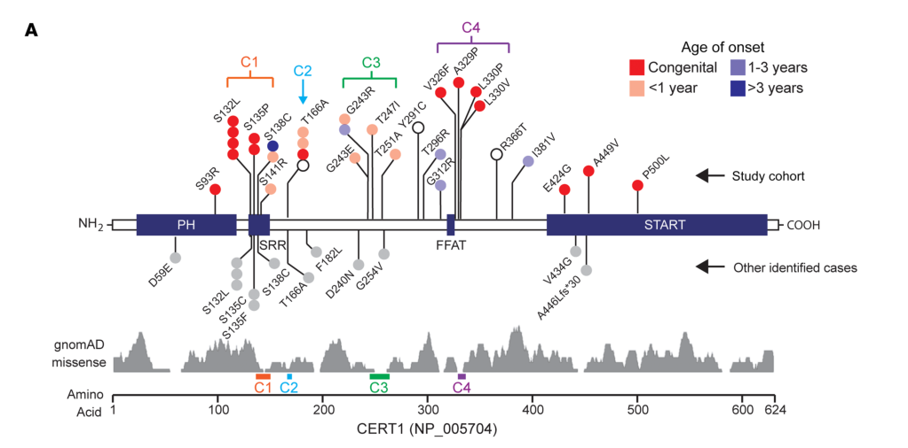

Intellectual disability, autosomal dominant 34 (MRD34) is an ultra-rare Mendelian neurodevelopmental disorder caused by heterozygous, usually de novo, missense variants in CERT1 (formerly COL4A3BP), the gene encoding the ceramide transport protein CERT. The expanded phenotype delineated in a 31-person international cohort is now also called ceramide transporter (CerTra) syndrome. CERT moves ceramide from the endoplasmic reticulum to the trans-Golgi at ER-Golgi membrane contact sites, where it is converted to sphingomyelin; its activity is normally switched off by multisite hyperphosphorylation of a serine-repeat motif (SRM) once cellular sphingomyelin demand is met. The disease alleles cluster in that autoregulatory machinery - the SRM serines (p.S132, p.S135, p.S138, p.S141), a nearby non-SRM residue (p.G243), and a dimeric helical domain characterised in 2023 - and block the inactivating hyperphosphorylation, leaving CERT constitutively active. The mechanism is therefore gain of function, not haploinsufficiency, and a rare CERT1 variant is not by itself diagnostic: a C-terminal frameshift (p.Pro749fs) segregated away from disease and behaved as a functional negative control. Constitutively active CERT redistributes into cytoplasmic puncta and drives excess sphingomyelin synthesis. Clinically the disorder presents with infantile hypotonia, global developmental delay, motor and speech delay, intellectual disability of mild to profound degree, autism and other behavioural abnormalities, high pain tolerance, feeding difficulties, and seizures, with thin corpus callosum, ventriculomegaly, delayed myelination and cerebellar atrophy reported on neuroimaging. Management is entirely supportive; pharmacological CERT inhibition rescues the Drosophila model but has never been tested in patients.
Ask a research question about Intellectual Disability Autosomal Dominant 34. OpenScientist will conduct autonomous deep research using the Disorder Mechanisms Knowledge Base and PubMed literature (typically 10-30 minutes).
Do not include personal health information in your question. Questions and results are cached in your browser's local storage.
Conditions with similar clinical presentations that must be differentiated from Intellectual Disability Autosomal Dominant 34:
name: Intellectual Disability Autosomal Dominant 34
creation_date: "2026-09-04T02:26:58Z"
category: Mendelian
synonyms:
- MRD34
- intellectual disability, autosomal dominant 34
- autosomal dominant intellectual disability 34
- intellectual developmental disorder, autosomal dominant 34
- CERT1-related neurodevelopmental disorder
- ceramide transporter syndrome
- CerTra syndrome
- COL4A3BP autosomal dominant non-syndromic intellectual disability
description: >-
Intellectual disability, autosomal dominant 34 (MRD34) is an ultra-rare
Mendelian neurodevelopmental disorder caused by heterozygous, usually de novo,
missense variants in CERT1 (formerly COL4A3BP), the gene encoding the ceramide
transport protein CERT. The expanded phenotype delineated in a 31-person
international cohort is now also called ceramide transporter (CerTra)
syndrome. CERT moves ceramide from the endoplasmic reticulum to the
trans-Golgi at ER-Golgi membrane contact sites, where it is converted to
sphingomyelin; its activity is normally switched off by multisite
hyperphosphorylation of a serine-repeat motif (SRM) once cellular sphingomyelin
demand is met. The disease alleles cluster in that autoregulatory machinery -
the SRM serines (p.S132, p.S135, p.S138, p.S141), a nearby non-SRM residue
(p.G243), and a dimeric helical domain characterised in 2023 - and block the
inactivating hyperphosphorylation, leaving CERT constitutively active. The
mechanism is therefore gain of function, not haploinsufficiency, and a rare
CERT1 variant is not by itself diagnostic: a C-terminal frameshift
(p.Pro749fs) segregated away from disease and behaved as a functional negative
control. Constitutively active CERT redistributes into cytoplasmic puncta and
drives excess sphingomyelin synthesis. Clinically the disorder presents with
infantile hypotonia, global developmental delay, motor and speech delay,
intellectual disability of mild to profound degree, autism and other
behavioural abnormalities, high pain tolerance, feeding difficulties, and
seizures, with thin corpus callosum, ventriculomegaly, delayed myelination and
cerebellar atrophy reported on neuroimaging. Management is entirely
supportive; pharmacological CERT inhibition rescues the Drosophila model but
has never been tested in patients.
disease_term:
preferred_term: intellectual disability, autosomal dominant 34
term:
id: MONDO:0014599
label: intellectual disability, autosomal dominant 34
parents:
- autosomal dominant non-syndromic intellectual disability
references:
- reference: PMID:36976648
title: "CERT1 mutations perturb human development by disrupting sphingolipid homeostasis."
- reference: PMID:33347465
title: "Intellectual disability-associated gain-of-function mutations in CERT1 that encodes the ceramide transport protein CERT."
- reference: PMID:34688657
title: "Intellectual-disability-associated mutations in the ceramide transport protein gene CERT1 lead to aberrant function and subcellular distribution."
- reference: PMID:31254361
title: "Structure, functions and regulation of CERT, a lipid-transfer protein for the delivery of ceramide at the ER-Golgi membrane contact sites."
- reference: PMID:25356899
title: "De novo mutations in moderate or severe intellectual disability."
- reference: PMID:42051775
title: "Choroid plexus and perivascular space abnormalities in CerTra syndrome: neuroimaging and histological findings."
- reference: PMID:39450584
title: "Live-Cell Identification of Inhibitors of the Lipid Transfer Protein CERT Using Nanoluciferase Bioluminescence Resonance Energy Transfer (NanoBRET)."
- reference: PMID:30878996
title: "Golgipathies in Neurodevelopment: A New View of Old Defects."
inheritance:
- name: Autosomal dominant inheritance
inheritance_term:
preferred_term: Autosomal dominant inheritance
term:
id: HP:0000006
label: Autosomal dominant inheritance
description: >-
MRD34 is autosomal dominant and is caused by a heterozygous CERT1 variant
that is de novo in the great majority of molecularly characterised
individuals: 25 of the 27 patients with biparental samples in the defining
cohort. Penetrance is recorded as INCOMPLETE on a narrow basis. One variant
in the FFAT-motif cluster, p.V326F, was inherited from a reportedly
unaffected father; a second inherited allele, p.A449V, came from a mother
with intellectual disability that the authors judged independent of her
CERT1 genotype, and they separately doubt whether that allele is pathogenic.
So the evidence for reduced penetrance is one family, not a series.
penetrance: INCOMPLETE
expressivity: VARIABLE
de_novo_rate: 93% (25 of 27 patients with biparental samples in the defining cohort)
evidence:
- reference: PMID:36976648
reference_title: "CERT1 mutations perturb human development by disrupting sphingolipid homeostasis."
supports: SUPPORT
evidence_source: HUMAN_CLINICAL
snippet: "Here, we characterize 31 individuals with de novo missense variants in CERT1."
explanation: >-
The defining cohort establishes that the disorder arises from heterozygous
de novo missense alleles, which is the autosomal dominant pattern.
- reference: PMID:36976648
reference_title: "CERT1 mutations perturb human development by disrupting sphingolipid homeostasis."
supports: SUPPORT
evidence_source: HUMAN_CLINICAL
snippet: "Family segregation confirmed that CERT1 variants occurred de novo in 93% (25 of 27) of patients."
explanation: >-
Quantifies the de novo fraction among the patients for whom biparental
samples were available, which is the basis of the recorded de novo rate.
- reference: PMID:36976648
reference_title: "CERT1 mutations perturb human development by disrupting sphingolipid homeostasis."
supports: SUPPORT
evidence_source: HUMAN_CLINICAL
snippet: "The p.V326F variant in S21 was inherited from her reportedly unaffected father, whereas the p.A449V variant in S26 was inherited from her mother, who was diagnosed with intellectual disability"
explanation: >-
The basis for INCOMPLETE rather than COMPLETE penetrance: a variant in the
functionally implicated FFAT-motif cluster was transmitted by a reportedly
unaffected father. Note the second allele in the same sentence is weaker
evidence, since the transmitting mother's intellectual disability was
judged independent of her CERT1 genotype.
- reference: PMID:36976648
reference_title: "CERT1 mutations perturb human development by disrupting sphingolipid homeostasis."
supports: REFUTE
evidence_source: HUMAN_CLINICAL
snippet: "When analyzed in greater depth, these variants present some doubts about their actual pathogenicity"
explanation: >-
Cuts against reading every inherited allele as reduced penetrance: the
authors question whether four singleton non-clustered variants, including
the maternally inherited p.A449V, are pathogenic at all. The incomplete
penetrance claim therefore rests on the single p.V326F family.
- reference: PMID:42051775
reference_title: "Choroid plexus and perivascular space abnormalities in CerTra syndrome: neuroimaging and histological findings."
supports: SUPPORT
evidence_source: HUMAN_CLINICAL
snippet: "In CerTra syndrome, most pathogenic variants arise de novo and are heterozygous."
explanation: >-
An independent report states the dominant, predominantly de novo
inheritance pattern directly.
prevalence:
- population: Worldwide
measure_type: CASES_IN_LITERATURE
prevalence_class: NOT_YET_DOCUMENTED
notes: >-
No population-based prevalence or incidence estimate exists. The largest
published delineation is an international series of 31 unrelated individuals
ascertained through rare-disease referral and matchmaking, which has no
population denominator, and MONDO records no Orphanet cross-reference from
which an Orphanet prevalence class could be taken. The literature case count
is recorded here rather than a rate; do not read NOT_YET_DOCUMENTED as a
claim that the disorder is vanishingly rare, since ascertainment through
nonspecific developmental delay is likely incomplete.
evidence:
- reference: PMID:36976648
reference_title: "CERT1 mutations perturb human development by disrupting sphingolipid homeostasis."
supports: SUPPORT
evidence_source: HUMAN_CLINICAL
snippet: "Here, we characterize 31 individuals with de novo missense variants in CERT1."
explanation: >-
Establishes the size of the largest reported case series, which is the
only occurrence figure available for this disorder.
- reference: PMID:42051775
reference_title: "Choroid plexus and perivascular space abnormalities in CerTra syndrome: neuroimaging and histological findings."
supports: SUPPORT
evidence_source: HUMAN_CLINICAL
snippet: "Due to the limited number of reported cases and the rarity of CerTra syndrome, the neuroimaging features associated with this condition remain insufficiently characterized, and definitive conclusions have yet to be established."
explanation: >-
Confirms that the reported case count remains small enough that even
descriptive features are not yet settled, let alone population rates.
pathophysiology:
- name: CERT1 Autoregulatory-Domain Missense Variant
biological_scale: MOLECULAR
description: >-
The initiating lesion is a heterozygous missense variant in CERT1 affecting
the autoregulatory apparatus of the ceramide transport protein: the
serine-repeat motif serines (p.S132, p.S135, p.S138, p.S141), the nearby
non-SRM residue p.G243, or the dimeric helical domain that mediates
homeostatic inactivation. The variant is de novo in most reported
individuals.
mechanism_confidence: ESTABLISHED
genes:
- preferred_term: CERT1
term:
id: hgnc:2205
label: CERT1
genetic_context:
gene:
preferred_term: CERT1
term:
id: hgnc:2205
label: CERT1
allele_type: missense
variant_origin: DE_NOVO
zygosity: HETEROZYGOUS
functional_impact_category: GAIN_OF_FUNCTION
description: >-
Disease alleles are heterozygous missense changes that render CERT
excessively active. This is a gain of function and not haploinsufficiency:
a C-terminal frameshift allele (p.Pro749fs) segregated away from
intellectual disability in its family and left CERT function intact in
knock-in cells, so it served as a disease-matched negative control.
downstream:
- target: Loss of Phosphorylation-Dependent CERT Autorepression
causal_link_type: DIRECT
description: >-
Substitution of an SRM serine, or of a residue that supports SRM
phosphorylation, prevents the hyperphosphorylation that normally silences
CERT.
evidence:
- reference: PMID:33347465
reference_title: "Intellectual disability-associated gain-of-function mutations in CERT1 that encodes the ceramide transport protein CERT."
supports: SUPPORT
evidence_source: IN_VITRO
snippet: "Biochemical analysis showed that S135 is essential for hyperphosphorylation of a serine-repeat motif of CERT, which is required for down-regulation of CERT activity."
explanation: >-
Directly links the variant residue to failure of the phosphorylation
step that downregulates CERT, which is the next node in the chain.
- reference: PMID:34688657
reference_title: "Intellectual-disability-associated mutations in the ceramide transport protein gene CERT1 lead to aberrant function and subcellular distribution."
supports: SUPPORT
evidence_source: IN_VITRO
snippet: "Biochemical analysis showed that G243R and S132L, but not dupAA, impair SRM hyperphosphorylation and render the CERT variants excessively active."
explanation: >-
Shows the same edge for two further disease alleles, including one
outside the SRM, against a non-causative control allele.
evidence:
- reference: PMID:36976648
reference_title: "CERT1 mutations perturb human development by disrupting sphingolipid homeostasis."
supports: SUPPORT
evidence_source: HUMAN_CLINICAL
snippet: "Several variants fall into a previously uncharacterized dimeric helical domain that enables CERT homeostatic inactivation, without which sphingolipid production goes unchecked."
explanation: >-
Establishes that the disease variants sit in the machinery that switches
CERT off, which is why the variant class is the initiating lesion.
- reference: PMID:42051775
reference_title: "Choroid plexus and perivascular space abnormalities in CerTra syndrome: neuroimaging and histological findings."
supports: SUPPORT
evidence_source: HUMAN_CLINICAL
snippet: "These variants cluster within regulatory domains essential for CERT phosphorylation and inactivation."
explanation: >-
Independently states the regulatory-domain clustering that defines this
node.
- reference: PMID:34688657
reference_title: "Intellectual-disability-associated mutations in the ceramide transport protein gene CERT1 lead to aberrant function and subcellular distribution."
supports: SUPPORT
evidence_source: HUMAN_CLINICAL
snippet: "However, familial analysis revealed that the dupAA variant was not associated with ID, allowing us to utilize it as a disease-matched negative control for CERT1 variants that are associated with ID."
explanation: >-
Supports restricting this node to autoregulatory-domain alleles: a
C-terminal frameshift in the same gene was shown not to be causal.
- name: Loss of Phosphorylation-Dependent CERT Autorepression
biological_scale: MOLECULAR
description: >-
CERT is normally silenced by multisite phosphorylation of its serine-repeat
motif once cellular sphingomyelin requirements are met. Disease variants
shift the protein from the hyperphosphorylated form to de- or
hypophosphorylated forms, so this negative-feedback brake is lost.
mechanism_confidence: ESTABLISHED
biological_processes:
- preferred_term: SRM hyperphosphorylation of CERT
term:
id: GO:0018105
label: peptidyl-serine phosphorylation
modifier: DECREASED
downstream:
- target: Constitutive CERT Activation
causal_link_type: DIRECT
description: >-
Because SRM phosphorylation is what represses transport activity, its
failure leaves the transporter switched on.
evidence:
- reference: PMID:42051775
reference_title: "Choroid plexus and perivascular space abnormalities in CerTra syndrome: neuroimaging and histological findings."
supports: SUPPORT
evidence_source: HUMAN_CLINICAL
snippet: "Several disease-associated CERT1 variants disrupt the autoregulatory phosphorylation of CERT, resulting in constitutive activation of the transporter and increased sphingolipid synthesis, consistent with a gain-of-function mechanism"
explanation: >-
States the causal step from disrupted autoregulatory phosphorylation to
constitutive activation.
evidence:
- reference: PMID:31254361
reference_title: "Structure, functions and regulation of CERT, a lipid-transfer protein for the delivery of ceramide at the ER-Golgi membrane contact sites."
supports: SUPPORT
evidence_source: OTHER
snippet: "The function of CERT is down-regulated by multisite phosphorylation of a serine-repeat motif (SRM) and up-regulated by phosphorylation of serine 315 in CERT."
explanation: >-
Establishes the normal repressive role of SRM phosphorylation that disease
variants abolish.
- reference: PMID:34688657
reference_title: "Intellectual-disability-associated mutations in the ceramide transport protein gene CERT1 lead to aberrant function and subcellular distribution."
supports: SUPPORT
evidence_source: IN_VITRO
snippet: "Hyperphosphorylation of CERT's serine-repeat motif (SRM) decreases its functionality."
explanation: >-
Confirms the direction of the regulatory relationship in the same
experimental system that characterised the disease alleles.
- name: Constitutive CERT Activation
biological_scale: MOLECULAR
description: >-
With autorepression lost, CERT is excessively and constitutively active as a
ceramide transfer protein. This is the pivotal gain-of-function state of the
disorder and the node that CERT inhibitors are aimed at.
mechanism_confidence: ESTABLISHED
molecular_functions:
- preferred_term: CERT-mediated ceramide transfer activity
term:
id: GO:0120017
label: ceramide transfer activity
modifier: GAIN_OF_FUNCTION
downstream:
- target: Excess ER-to-Golgi Ceramide Transfer
causal_link_type: DIRECT
description: >-
An unrepressed transporter moves more ceramide per unit time across the
ER-Golgi membrane contact site.
evidence:
- reference: PMID:31254361
reference_title: "Structure, functions and regulation of CERT, a lipid-transfer protein for the delivery of ceramide at the ER-Golgi membrane contact sites."
supports: SUPPORT
evidence_source: OTHER
snippet: "Ceramide transport protein (CERT) transports ceramide from the ER to the trans-Golgi regions at the ER-Golgi membrane contact sites (MCS)."
explanation: >-
Establishes that transfer at the contact site is the activity that CERT
activation scales up.
directness: INDIRECT
- target: Punctate Subcellular Redistribution of CERT
causal_link_type: DIRECT
description: >-
Constitutively activated CERT variants leave the diffuse cytoplasmic and
perinuclear pattern of the wild-type protein and concentrate into puncta,
partly co-staining with VAP-A.
evidence:
- reference: PMID:34688657
reference_title: "Intellectual-disability-associated mutations in the ceramide transport protein gene CERT1 lead to aberrant function and subcellular distribution."
supports: SUPPORT
evidence_source: IN_VITRO
snippet: "Additionally, both S132L and G243R mutations but not dupAA caused the proteins to be distributed in a punctate subcellular manner."
explanation: >-
Ties the redistribution specifically to the activating disease alleles
and not to the non-causative control allele.
evidence:
- reference: PMID:33347465
reference_title: "Intellectual disability-associated gain-of-function mutations in CERT1 that encodes the ceramide transport protein CERT."
supports: SUPPORT
evidence_source: IN_VITRO
snippet: "These results identified specific ID-associated CERT1 mutations that induced gain-of-function effects on CERT activity."
explanation: >-
States the gain-of-function activity state that defines this node.
- reference: PMID:36976648
reference_title: "CERT1 mutations perturb human development by disrupting sphingolipid homeostasis."
supports: SUPPORT
evidence_source: HUMAN_CLINICAL
snippet: "The clinical severity reflects the degree to which CERT autoregulation is disrupted"
explanation: >-
Clinical severity grades with the degree of autoregulatory disruption,
which is what makes the resulting excess CERT activity the operative
disease state rather than an incidental in-vitro property.
- name: Punctate Subcellular Redistribution of CERT
biological_scale: CELLULAR
description: >-
Activated CERT variants adopt an abnormal punctate intracellular
distribution. This is a cellular correlate of the activated state rather
than a demonstrated cause of downstream neural pathology, and it has been
proposed as the basis of a functional assay for variant interpretation.
mechanism_confidence: ESTABLISHED
cellular_components:
- preferred_term: organelle membrane contact site
term:
id: GO:0044232
label: organelle membrane contact site
evidence:
- reference: PMID:33347465
reference_title: "Intellectual disability-associated gain-of-function mutations in CERT1 that encodes the ceramide transport protein CERT."
supports: SUPPORT
evidence_source: IN_VITRO
snippet: "Amino acid replacements of S135 abnormally activated CERT and induced an intracellular punctate distribution pattern of this protein."
explanation: >-
Couples the activated state to the punctate pattern for the S135 alleles.
- reference: PMID:34688657
reference_title: "Intellectual-disability-associated mutations in the ceramide transport protein gene CERT1 lead to aberrant function and subcellular distribution."
supports: SUPPORT
evidence_source: IN_VITRO
snippet: "This conclusion supports our previous proposal that the intracellular punctate distribution pattern of CERT mutants may be applicable as a molecular diagnostic assay to assess whether CERT is abnormally activated by CERT1 mutations."
explanation: >-
Records that the redistribution is being used as a readout of activation
rather than as a causal step, which is why this node has no downstream edge.
- name: Excess ER-to-Golgi Ceramide Transfer
biological_scale: CELLULAR
description: >-
Non-vesicular delivery of ceramide from the endoplasmic reticulum to the
trans-Golgi runs above its normally regulated level.
mechanism_confidence: ESTABLISHED
biological_processes:
- preferred_term: ER-to-Golgi ceramide transport
term:
id: GO:0035627
label: ceramide transport
modifier: INCREASED
cellular_components:
- preferred_term: endoplasmic reticulum membrane
term:
id: GO:0005789
label: endoplasmic reticulum membrane
- preferred_term: trans-Golgi network
term:
id: GO:0005802
label: trans-Golgi network
downstream:
- target: Increased Sphingomyelin Synthesis
causal_link_type: DIRECT
description: >-
Ceramide arriving at the trans-Golgi is the substrate for sphingomyelin
synthase, so a higher delivery rate raises sphingomyelin output.
evidence:
- reference: PMID:34688657
reference_title: "Intellectual-disability-associated mutations in the ceramide transport protein gene CERT1 lead to aberrant function and subcellular distribution."
supports: SUPPORT
evidence_source: IN_VITRO
snippet: "we infer that the majority of ID-associated CERT variants may impair SRM phosphorylation-dependent repression, resulting in an increase in sphingomyelin production concurrent with CERT subcellular redistribution."
explanation: >-
States the step from unrepressed transfer to increased sphingomyelin
production.
evidence:
- reference: PMID:33347465
reference_title: "Intellectual disability-associated gain-of-function mutations in CERT1 that encodes the ceramide transport protein CERT."
supports: SUPPORT
evidence_source: OTHER
snippet: "The ceramide transport protein (CERT) encoded by CERT1 mediates inter-organelle trafficking of ceramide for the synthesis of intracellular sphingomyelin."
explanation: >-
Establishes the transport step that is running in excess at this node.
- name: Increased Sphingomyelin Synthesis
biological_scale: CELLULAR
description: >-
Sphingomyelin production rises above the level set by cellular demand.
Metabolic labelling in cells expressing S132L or G243R CERT showed
significantly more labelled sphingomyelin than wild-type-rescued cells.
mechanism_confidence: ESTABLISHED
biological_processes:
- preferred_term: sphingomyelin biosynthetic process
term:
id: GO:0006686
label: sphingomyelin biosynthetic process
modifier: INCREASED
downstream:
- target: Dysregulated Sphingolipid Homeostasis
causal_link_type: DIRECT
description: >-
Sphingomyelin production that is no longer matched to demand is what
breaks homeostatic control of the sphingolipid pool.
evidence:
- reference: PMID:36976648
reference_title: "CERT1 mutations perturb human development by disrupting sphingolipid homeostasis."
supports: SUPPORT
evidence_source: HUMAN_CLINICAL
snippet: "Several variants fall into a previously uncharacterized dimeric helical domain that enables CERT homeostatic inactivation, without which sphingolipid production goes unchecked."
explanation: >-
States that unchecked production is the immediate consequence of losing
homeostatic inactivation.
evidence:
- reference: PMID:34688657
reference_title: "Intellectual-disability-associated mutations in the ceramide transport protein gene CERT1 lead to aberrant function and subcellular distribution."
supports: SUPPORT
evidence_source: IN_VITRO
snippet: "When the mutant CERT S132L or G243R constructs were expressed, the levels of labeled SM were significantly higher than those observed in the WT CERT rescued cells"
explanation: >-
Direct metabolic-labelling measurement of the increased output for two
disease alleles.
- name: Dysregulated Sphingolipid Homeostasis
biological_scale: CELLULAR
description: >-
The feedback loop that matches sphingolipid biosynthetic flux to cellular
requirement is broken, so the sphingolipid composition of membranes is set
by an unregulated transporter rather than by demand.
mechanism_confidence: ESTABLISHED
biological_processes:
- preferred_term: sphingolipid metabolic process
term:
id: GO:0006665
label: sphingolipid metabolic process
modifier: DYSREGULATED
downstream:
- target: Impaired Neural Differentiation and Synaptic Membrane Function
causal_link_type: INDIRECT_UNKNOWN_INTERMEDIATES
description: >-
Membrane sphingolipids are required for neural differentiation, synaptic
transmission and action potential propagation, so loss of homeostatic
control of the pool is taken to compromise those processes. The
intermediate steps and the vulnerable human neural cell type have not been
identified.
evidence:
- reference: PMID:36976648
reference_title: "CERT1 mutations perturb human development by disrupting sphingolipid homeostasis."
supports: SUPPORT
evidence_source: HUMAN_CLINICAL
snippet: "Neural differentiation, synaptic transmission, and action potential propagation depend on membrane sphingolipids, whose metabolism is tightly regulated."
explanation: >-
Supports the dependence of these neural processes on regulated
sphingolipid metabolism; the step to disease remains an inference, which
is why the link is typed as having unknown intermediates.
directness: INDIRECT
- target: Facial dysmorphism
causal_link_type: INDIRECT_UNKNOWN_INTERMEDIATES
description: >-
The mild facial and distal limb features are placed downstream of the
systemic sphingolipid lesion rather than of the neural node, since they
are morphogenetic rather than neurological. No mechanism connecting
sphingolipid flux to these structures has been demonstrated.
- target: Digit, hand and foot anomalies
causal_link_type: INDIRECT_UNKNOWN_INTERMEDIATES
description: >-
Placed downstream of the systemic sphingolipid lesion rather than of the
neural node, on the same reasoning as the facial features they accompany:
they are morphogenetic rather than neurological. No mechanism connecting
sphingolipid flux to limb patterning has been demonstrated.
evidence:
- reference: PMID:36976648
reference_title: "CERT1 mutations perturb human development by disrupting sphingolipid homeostasis."
supports: SUPPORT
evidence_source: HUMAN_CLINICAL
snippet: "These findings uncover a central role for CERT autoregulation in the control of sphingolipid biosynthetic flux, provide unexpected insight into the structural organization of CERT, and suggest a possible therapeutic approach for patients with CerTra syndrome."
explanation: >-
Names control of sphingolipid biosynthetic flux as the function that CERT
autoregulation serves and that is lost here.
- reference: PMID:42051775
reference_title: "Choroid plexus and perivascular space abnormalities in CerTra syndrome: neuroimaging and histological findings."
supports: SUPPORT
evidence_source: HUMAN_CLINICAL
snippet: "These variants disrupt ceramide transport and sphingolipid homeostasis, leading to a clinical phenotype that includes developmental delay, movement abnormalities, and structural brain anomalies."
explanation: >-
Independent statement that disrupted sphingolipid homeostasis is the state
that connects the molecular lesion to the clinical phenotype.
notes: >-
Whole-cell lipidomics in HCT116 cells expressing S132L or G243R CERT did not
show a significant shift in bulk sphingolipid levels relative to wild-type
CERT, so the dysregulation demonstrated to date is of biosynthetic flux and
regulation rather than of steady-state whole-cell composition. No patient
lipidomic or metabolomic signature has been validated.
- name: Impaired Neural Differentiation and Synaptic Membrane Function
biological_scale: TISSUE
description: >-
Altered sphingolipid flux in the developing nervous system is inferred to
compromise neural differentiation, membrane composition and synaptic
function, producing the cognitive, motor, language and behavioural
phenotype. This is the least well characterised step of the chain: no
patient neural tissue, iPSC-neuron or organoid study has identified the
primary vulnerable cell type.
mechanism_confidence: PROVISIONAL
biological_processes:
- preferred_term: nervous system development
term:
id: GO:0007399
label: nervous system development
modifier: ABNORMAL
cell_types:
- preferred_term: neuron
term:
id: CL:0000540
label: neuron
locations:
- preferred_term: brain
term:
id: UBERON:0000955
label: brain
downstream:
- target: Abnormal Cerebral Myelination and Atrophy
causal_link_type: INDIRECT_UNKNOWN_INTERMEDIATES
description: >-
A subset of affected individuals develop white-matter and atrophic changes
on MRI, which are attributed to the same disturbance of neural lipid
biology. The link rests on human imaging rather than on a demonstrated
mechanism.
- target: Global developmental delay
causal_link_type: INDIRECT_UNKNOWN_INTERMEDIATES
- target: Intellectual disability
causal_link_type: INDIRECT_UNKNOWN_INTERMEDIATES
- target: Delayed speech and language development
causal_link_type: INDIRECT_UNKNOWN_INTERMEDIATES
- target: Motor delay
causal_link_type: INDIRECT_UNKNOWN_INTERMEDIATES
- target: Infantile hypotonia
causal_link_type: INDIRECT_UNKNOWN_INTERMEDIATES
- target: Atypical behavior
causal_link_type: INDIRECT_UNKNOWN_INTERMEDIATES
- target: Autism spectrum disorder
causal_link_type: INDIRECT_UNKNOWN_INTERMEDIATES
- target: Stereotypical hand movements
causal_link_type: INDIRECT_UNKNOWN_INTERMEDIATES
- target: Self-injurious behavior
causal_link_type: INDIRECT_UNKNOWN_INTERMEDIATES
- target: Sleep disturbance
causal_link_type: INDIRECT_UNKNOWN_INTERMEDIATES
- target: Attention deficit hyperactivity disorder
causal_link_type: INDIRECT_UNKNOWN_INTERMEDIATES
- target: Aggressive behavior
causal_link_type: INDIRECT_UNKNOWN_INTERMEDIATES
- target: Seizures
causal_link_type: INDIRECT_UNKNOWN_INTERMEDIATES
- target: Impaired pain sensation
causal_link_type: INDIRECT_UNKNOWN_INTERMEDIATES
- target: Feeding difficulties
causal_link_type: INDIRECT_UNKNOWN_INTERMEDIATES
evidence:
- reference: PMID:42051775
reference_title: "Choroid plexus and perivascular space abnormalities in CerTra syndrome: neuroimaging and histological findings."
supports: SUPPORT
evidence_source: HUMAN_CLINICAL
snippet: "Affected individuals exhibit varying degrees of infantile hypotonia, global developmental delay, motor delay, and intellectual disability (3). Additional clinical features may include speech delay, behavioral abnormalities, high pain tolerance, feeding difficulties, and seizures."
explanation: >-
Enumerates the neurodevelopmental manifestations that this node is
asserted to produce.
- reference: PMID:36976648
reference_title: "CERT1 mutations perturb human development by disrupting sphingolipid homeostasis."
supports: SUPPORT
evidence_source: HUMAN_CLINICAL
snippet: "Mutations in the ceramide transporter CERT (CERT1), which is involved in sphingolipid biosynthesis, are associated with intellectual disability, but the pathogenic mechanism remains obscure."
explanation: >-
Records both the association with intellectual disability and the authors'
own statement that the pathogenic mechanism at this level is unresolved,
which is why the node is marked PROVISIONAL.
- name: Abnormal Cerebral Myelination and Atrophy
biological_scale: TISSUE
description: >-
A subset of affected individuals show thin corpus callosum,
ventriculomegaly, delayed myelination and cerebellar atrophy on brain MRI.
In one autopsied child, choroid plexus epithelial disorganisation with
reduced aquaporin-1, cysts and calcification, and perivascular spaces
distended with proteinaceous material were also found.
mechanism_confidence: PROVISIONAL
biological_processes:
- preferred_term: myelination
term:
id: GO:0042552
label: myelination
modifier: ABNORMAL
cell_types:
- preferred_term: oligodendrocyte
term:
id: CL:0000128
label: oligodendrocyte
locations:
- preferred_term: corpus callosum
term:
id: UBERON:0002336
label: corpus callosum
- preferred_term: cerebellum
term:
id: UBERON:0002037
label: cerebellum
downstream:
- target: Thin corpus callosum
causal_link_type: DIRECT
- target: Delayed myelination
causal_link_type: DIRECT
- target: Ventriculomegaly
causal_link_type: DIRECT
- target: Cerebellar atrophy
causal_link_type: DIRECT
evidence:
- reference: PMID:42051775
reference_title: "Choroid plexus and perivascular space abnormalities in CerTra syndrome: neuroimaging and histological findings."
supports: SUPPORT
evidence_source: HUMAN_CLINICAL
snippet: "In a recent study by Gehin et al. (3), neuroimaging findings commonly reported in CerTra syndrome include a thin corpus callosum, ventriculomegaly, delayed myelination, and cerebellar atrophy."
explanation: >-
Enumerates the structural brain findings that constitute this node.
- reference: PMID:42051775
reference_title: "Choroid plexus and perivascular space abnormalities in CerTra syndrome: neuroimaging and histological findings."
supports: SUPPORT
evidence_source: HUMAN_CLINICAL
snippet: "Neuropathological examination demonstrated marked ChP epithelial disorganization, reduced aquaporin-1 (AQP1) expression, cyst formation, and focal calcifications, which may be associated with disturbances in cerebrospinal fluid (CSF) dynamics."
explanation: >-
Adds the single available neuropathological characterisation; the hedged
wording is why the node is PROVISIONAL rather than ESTABLISHED.
phenotypes:
- category: Neurologic
name: Global developmental delay
description: >-
Delay across cognitive and motor domains is the usual presenting feature and
is generally apparent during infancy.
phenotype_term:
preferred_term: Global developmental delay
term:
id: HP:0001263
label: Global developmental delay
frequency: VERY_FREQUENT
evidence:
- reference: PMID:36976648
reference_title: "CERT1 mutations perturb human development by disrupting sphingolipid homeostasis."
supports: SUPPORT
evidence_source: HUMAN_CLINICAL
snippet: "only 4 of the individuals did not show some form of developmental delay by the end of the first year of life (4 of 26, 15%)"
explanation: >-
Gives the denominator behind the VERY_FREQUENT band: 22 of 26 patients had
some form of developmental delay by the end of the first year, stated as
the complementary 4 of 26 who did not.
- reference: PMID:42051775
reference_title: "Choroid plexus and perivascular space abnormalities in CerTra syndrome: neuroimaging and histological findings."
supports: SUPPORT
evidence_source: HUMAN_CLINICAL
snippet: "Affected individuals exhibit varying degrees of infantile hypotonia, global developmental delay, motor delay, and intellectual disability"
explanation: >-
Lists global developmental delay among the core manifestations of the
CERT1-related disorder.
- reference: PMID:42051775
reference_title: "Choroid plexus and perivascular space abnormalities in CerTra syndrome: neuroimaging and histological findings."
supports: SUPPORT
evidence_source: HUMAN_CLINICAL
snippet: "Her developmental course was notable for global delay affecting both cognitive and motor domains."
explanation: >-
Individual-level confirmation in a molecularly confirmed case.
- category: Neurologic
name: Intellectual disability
description: >-
Intellectual disability is the defining feature and ranges from mild to
profound.
phenotype_term:
preferred_term: Intellectual disability
term:
id: HP:0001249
label: Intellectual disability
evidence:
- reference: PMID:42051775
reference_title: "Choroid plexus and perivascular space abnormalities in CerTra syndrome: neuroimaging and histological findings."
supports: SUPPORT
evidence_source: HUMAN_CLINICAL
snippet: "Affected individuals exhibit varying degrees of infantile hypotonia, global developmental delay, motor delay, and intellectual disability"
explanation: >-
Lists intellectual disability of varying degree among the core features.
- reference: PMID:33347465
reference_title: "Intellectual disability-associated gain-of-function mutations in CERT1 that encodes the ceramide transport protein CERT."
supports: SUPPORT
evidence_source: HUMAN_CLINICAL
snippet: "Utilizing whole exome sequencing analysis, we identified a novel CERT variant, which substitutes a serine at position 135 (S135) for a proline in a patient with severe ID."
explanation: >-
A molecularly defined case at the severe end of the reported range.
- reference: PMID:34688657
reference_title: "Intellectual-disability-associated mutations in the ceramide transport protein gene CERT1 lead to aberrant function and subcellular distribution."
supports: SUPPORT
evidence_source: HUMAN_CLINICAL
snippet: "The Wechsler Intelligence Scale for Children – Fifth Edition showed a full scale composite score of 55, which was consistent with a mild ID"
explanation: >-
A formally measured mild end of the range, in the proband of the Tamura
report. Note this proband's CERT1 allele was subsequently judged
non-causative, so the measurement bounds the reported spectrum of the
referral population rather than of confirmed MRD34.
directness: INDIRECT
- reference: PMID:36976648
reference_title: "CERT1 mutations perturb human development by disrupting sphingolipid homeostasis."
supports: SUPPORT
evidence_source: HUMAN_CLINICAL
snippet: "Intellectual disability ranged from mild to profound, as per the criteria of the Diagnostic and Statistical Manual of Mental Disorders, 5th Edition (DSM-5)"
explanation: >-
States the range in the defining cohort and the instrument used to grade
it, which is what makes mild-to-profound a measured span rather than an
impression.
- category: Neurologic
name: Motor delay
description: >-
Motor milestones are delayed, with reported outcomes ranging from mild delay
to walking only with support.
phenotype_term:
preferred_term: Motor delay
term:
id: HP:0001270
label: Motor delay
frequency: VERY_FREQUENT
evidence:
- reference: PMID:36976648
reference_title: "CERT1 mutations perturb human development by disrupting sphingolipid homeostasis."
supports: SUPPORT
evidence_source: HUMAN_CLINICAL
snippet: "These were likely early manifestations of what would later become frank motor delays, affecting 26 of 29 patients"
explanation: >-
The denominator behind the VERY_FREQUENT band, and the observation that
motor delay is prefigured by the neonatal feeding and tone problems.
- reference: PMID:42051775
reference_title: "Choroid plexus and perivascular space abnormalities in CerTra syndrome: neuroimaging and histological findings."
supports: SUPPORT
evidence_source: HUMAN_CLINICAL
snippet: "Affected individuals exhibit varying degrees of infantile hypotonia, global developmental delay, motor delay, and intellectual disability"
explanation: >-
Lists motor delay among the core manifestations.
- category: Neurologic
name: Infantile hypotonia
description: >-
Hypotonia is typically evident in infancy and contributes to both motor
delay and feeding difficulty.
phenotype_term:
preferred_term: Infantile hypotonia
term:
id: HP:0001252
label: Hypotonia
onset:
onset_category: INFANTILE
evidence:
- reference: PMID:42051775
reference_title: "Choroid plexus and perivascular space abnormalities in CerTra syndrome: neuroimaging and histological findings."
supports: SUPPORT
evidence_source: HUMAN_CLINICAL
snippet: "Affected individuals exhibit varying degrees of infantile hypotonia, global developmental delay, motor delay, and intellectual disability"
explanation: >-
States infantile hypotonia as a core manifestation.
- category: Neurologic
name: Delayed speech and language development
description: >-
Speech and language delay is prominent and often more severe than the
general cognitive delay; some individuals remain non-verbal.
phenotype_term:
preferred_term: Delayed speech and language development
term:
id: HP:0000750
label: Delayed speech and language development
evidence:
- reference: PMID:42051775
reference_title: "Choroid plexus and perivascular space abnormalities in CerTra syndrome: neuroimaging and histological findings."
supports: SUPPORT
evidence_source: HUMAN_CLINICAL
snippet: "Additional clinical features may include speech delay, behavioral abnormalities, high pain tolerance, feeding difficulties, and seizures."
explanation: >-
Lists speech delay among the additional clinical features of the disorder.
- reference: PMID:42051775
reference_title: "Choroid plexus and perivascular space abnormalities in CerTra syndrome: neuroimaging and histological findings."
supports: SUPPORT
evidence_source: HUMAN_CLINICAL
snippet: "She was non-verbal and had chronic sleep disturbance."
explanation: >-
Documents the severe end of the language phenotype in a molecularly
confirmed case.
- reference: PMID:34688657
reference_title: "Intellectual-disability-associated mutations in the ceramide transport protein gene CERT1 lead to aberrant function and subcellular distribution."
supports: SUPPORT
evidence_source: HUMAN_CLINICAL
snippet: "he presented with speech delay with a limited number of words and no phrasing"
explanation: >-
A clinical description of the speech phenotype in a proband referred for
CERT1 evaluation.
directness: INDIRECT
- category: Behavioral
name: Atypical behavior
description: >-
Behavioural abnormality is the umbrella finding; the individual behaviours
that make it up are curated separately below with their own cohort
denominators. Retained as the general term because the secondary literature
describes the phenotype at this level.
phenotype_term:
preferred_term: Atypical behavior
term:
id: HP:0000708
label: Atypical behavior
evidence:
- reference: PMID:36976648
reference_title: "CERT1 mutations perturb human development by disrupting sphingolipid homeostasis."
supports: SUPPORT
evidence_source: HUMAN_CLINICAL
snippet: "Neurobehavioral abnormalities frequently led to a diagnosis of autism spectrum disorder (ASD) (19 of 27, 70%); some patients displayed stereotypical hand movements (14 of 18), self-injurious behavior (9 of 19), high pain tolerance (9 of 18), disrupted sleep patterns (9 of 21), attention deficit–hyperactivity disorder (10 of 19), or aggression (6 of 20)."
explanation: >-
The single cohort sentence that enumerates the component behaviours and
their denominators; each is also curated as its own phenotype.
- reference: PMID:42051775
reference_title: "Choroid plexus and perivascular space abnormalities in CerTra syndrome: neuroimaging and histological findings."
supports: SUPPORT
evidence_source: HUMAN_CLINICAL
snippet: "Additional clinical features may include speech delay, behavioral abnormalities, high pain tolerance, feeding difficulties, and seizures."
explanation: >-
Lists behavioural abnormalities among the clinical features.
- reference: PMID:34688657
reference_title: "Intellectual-disability-associated mutations in the ceramide transport protein gene CERT1 lead to aberrant function and subcellular distribution."
supports: SUPPORT
evidence_source: HUMAN_CLINICAL
snippet: "He had a behavioral disorder that frequently shifted from one activity to another and exhibited recurrent mannerisms, such as repeatedly putting his hand to his mouth."
explanation: >-
An individual-level description of the stereotypic and attentional
behaviour seen in this referral population.
directness: INDIRECT
- category: Behavioral
name: Autism spectrum disorder
description: >-
A formal autism spectrum disorder diagnosis was reached in most assessed
members of the defining cohort. It accompanies the neurodevelopmental
phenotype rather than constituting it: no cohort member carried ASD as a
primary diagnosis, and a targeted search of the SPARK autism database and
denovo-db found no de novo protein-altering CERT1 variant in the exome data,
so the authors conclude that CERT1 is not a significant autism gene and that
CerTra syndrome is a recognisable neurodevelopmental syndrome distinct from
ASD.
phenotype_term:
preferred_term: Autism spectrum disorder
term:
id: HP:0000717
label: Autism
frequency: FREQUENT
evidence:
- reference: PMID:36976648
reference_title: "CERT1 mutations perturb human development by disrupting sphingolipid homeostasis."
supports: SUPPORT
evidence_source: HUMAN_CLINICAL
snippet: "Neurobehavioral abnormalities frequently led to a diagnosis of autism spectrum disorder (ASD) (19 of 27, 70%)"
explanation: >-
The cohort denominator behind the FREQUENT band, 19 of 27 assessed
patients.
- reference: PMID:36976648
reference_title: "CERT1 mutations perturb human development by disrupting sphingolipid homeostasis."
supports: REFUTE
evidence_source: HUMAN_CLINICAL
snippet: "indicates that CERT1 variants are unlikely to be a significant contributor to autism but instead cause a recognizable neurodevelopmental syndrome distinct from ASD, which we will refer to as CerTra syndrome."
explanation: >-
Refutes any reading of this phenotype as making MRD34 an autism entity or
CERT1 an autism gene; the same authors reach the opposite conclusion from
SPARK and denovo-db and name the disorder as distinct from ASD.
- reference: PMID:36976648
reference_title: "CERT1 mutations perturb human development by disrupting sphingolipid homeostasis."
supports: REFUTE
evidence_source: HUMAN_CLINICAL
snippet: "none of the individuals in our cohort was diagnosed with ASD as a primary condition"
explanation: >-
Refutes reading ASD as the presenting or primary condition. In every
cohort member it was a comorbid behavioural diagnosis reached alongside
the developmental phenotype.
- category: Behavioral
name: Stereotypical hand movements
description: >-
Repetitive, non-functional hand movements, the most frequent of the
individual behavioural features recorded in the cohort.
phenotype_term:
preferred_term: Stereotypical hand movements
term:
id: HP:0000733
label: Motor stereotypy
frequency: FREQUENT
evidence:
- reference: PMID:36976648
reference_title: "CERT1 mutations perturb human development by disrupting sphingolipid homeostasis."
supports: SUPPORT
evidence_source: HUMAN_CLINICAL
snippet: "some patients displayed stereotypical hand movements (14 of 18)"
explanation: >-
The cohort denominator behind the FREQUENT band, 14 of 18 assessed
patients.
- category: Behavioral
name: Self-injurious behavior
description: >-
Self-directed injurious behaviour, reported in about half of the patients
for whom behavioural assessment was available.
phenotype_term:
preferred_term: Self-injurious behavior
term:
id: HP:0100716
label: Self-injurious behavior
frequency: FREQUENT
evidence:
- reference: PMID:36976648
reference_title: "CERT1 mutations perturb human development by disrupting sphingolipid homeostasis."
supports: SUPPORT
evidence_source: HUMAN_CLINICAL
snippet: "some patients displayed stereotypical hand movements (14 of 18), self-injurious behavior (9 of 19)"
explanation: >-
The cohort denominator behind the FREQUENT band, 9 of 19 assessed
patients.
- category: Behavioral
name: Sleep disturbance
description: >-
Disrupted sleep patterns, a recurrent and separately burdensome feature
rather than a consequence of the seizure phenotype.
phenotype_term:
preferred_term: Disrupted sleep patterns
term:
id: HP:0002360
label: Sleep disturbance
frequency: FREQUENT
evidence:
- reference: PMID:36976648
reference_title: "CERT1 mutations perturb human development by disrupting sphingolipid homeostasis."
supports: SUPPORT
evidence_source: HUMAN_CLINICAL
snippet: "high pain tolerance (9 of 18), disrupted sleep patterns (9 of 21)"
explanation: >-
The cohort denominator behind the FREQUENT band, 9 of 21 assessed
patients.
- category: Behavioral
name: Attention deficit hyperactivity disorder
description: >-
Attention deficit and hyperactivity, diagnosed in about half of the
behaviourally assessed cohort.
phenotype_term:
preferred_term: Attention deficit hyperactivity disorder
term:
id: HP:0007018
label: Attention deficit hyperactivity disorder
frequency: FREQUENT
evidence:
- reference: PMID:36976648
reference_title: "CERT1 mutations perturb human development by disrupting sphingolipid homeostasis."
supports: SUPPORT
evidence_source: HUMAN_CLINICAL
snippet: "disrupted sleep patterns (9 of 21), attention deficit–hyperactivity disorder (10 of 19)"
explanation: >-
The cohort denominator behind the FREQUENT band, 10 of 19 assessed
patients.
- category: Behavioral
name: Aggressive behavior
description: >-
Aggression, the least frequent of the individual behavioural features
recorded in the cohort but still present in about a third of those assessed.
phenotype_term:
preferred_term: Aggressive behavior
term:
id: HP:0000718
label: Aggressive behavior
frequency: FREQUENT
evidence:
- reference: PMID:36976648
reference_title: "CERT1 mutations perturb human development by disrupting sphingolipid homeostasis."
supports: SUPPORT
evidence_source: HUMAN_CLINICAL
snippet: "disrupted sleep patterns (9 of 21), attention deficit–hyperactivity disorder (10 of 19), or aggression (6 of 20)."
explanation: >-
The cohort denominator behind the FREQUENT band, 6 of 20 assessed
patients, which sits at the lower edge of that band.
- category: Neurologic
name: Impaired pain sensation
description: >-
Reduced responsiveness to painful stimuli, usually reported clinically as a
high pain tolerance.
phenotype_term:
preferred_term: High pain tolerance
term:
id: HP:0007328
label: Impaired pain sensation
frequency: FREQUENT
evidence:
- reference: PMID:36976648
reference_title: "CERT1 mutations perturb human development by disrupting sphingolipid homeostasis."
supports: SUPPORT
evidence_source: HUMAN_CLINICAL
snippet: "self-injurious behavior (9 of 19), high pain tolerance (9 of 18)"
explanation: >-
Gives the denominator behind the FREQUENT band, 9 of 18 assessed patients.
- reference: PMID:42051775
reference_title: "Choroid plexus and perivascular space abnormalities in CerTra syndrome: neuroimaging and histological findings."
supports: SUPPORT
evidence_source: HUMAN_CLINICAL
snippet: "Additional clinical features may include speech delay, behavioral abnormalities, high pain tolerance, feeding difficulties, and seizures."
explanation: >-
Lists high pain tolerance among the clinical features of the disorder.
- category: Neurologic
name: Seizures
description: >-
Seizures occur in a substantial minority of affected individuals and range
from readily controlled epilepsy to epileptic encephalopathy. Seizures are
not universal; the reported autopsy case had none.
phenotype_term:
preferred_term: Seizure
term:
id: HP:0001250
label: Seizure
frequency: FREQUENT
evidence:
- reference: PMID:36976648
reference_title: "CERT1 mutations perturb human development by disrupting sphingolipid homeostasis."
supports: SUPPORT
evidence_source: HUMAN_CLINICAL
snippet: "Multiple seizure types were reported (16 of 29)."
explanation: >-
Gives the denominator behind the FREQUENT band, 16 of 29, and records that
seizure type varied rather than following one syndromic pattern.
- reference: PMID:42051775
reference_title: "Choroid plexus and perivascular space abnormalities in CerTra syndrome: neuroimaging and histological findings."
supports: SUPPORT
evidence_source: HUMAN_CLINICAL
snippet: "Additional clinical features may include speech delay, behavioral abnormalities, high pain tolerance, feeding difficulties, and seizures."
explanation: >-
Lists seizures among the clinical features of the disorder.
- reference: PMID:42051775
reference_title: "Choroid plexus and perivascular space abnormalities in CerTra syndrome: neuroimaging and histological findings."
supports: REFUTE
evidence_source: HUMAN_CLINICAL
snippet: "no epilepsy or other neurological disorder has been diagnosed for this case"
explanation: >-
A molecularly confirmed individual without epilepsy, which refutes any
reading of seizures as an obligate feature.
- category: Gastrointestinal
name: Feeding difficulties
description: >-
Feeding and swallowing difficulty, often beginning in the neonatal period,
contributes to poor growth and requires nutritional support in some
individuals.
phenotype_term:
preferred_term: Feeding difficulties
term:
id: HP:0011968
label: Feeding difficulties
onset:
onset_category: NEONATAL
frequency: FREQUENT
sequelae:
- target: Failure to thrive
causal_link_type: DIRECT
description: >-
Neonatal feeding difficulty is the route by which poor weight gain is
established in this disorder.
evidence:
- reference: PMID:36976648
reference_title: "CERT1 mutations perturb human development by disrupting sphingolipid homeostasis."
supports: SUPPORT
evidence_source: HUMAN_CLINICAL
snippet: "Fifteen (of 24) patients had neonatal feeding difficulties, often with hypotonia or failure to thrive."
explanation: >-
Gives the denominator behind the FREQUENT band, 15 of 24, and dates the
onset to the neonatal period.
- reference: PMID:42051775
reference_title: "Choroid plexus and perivascular space abnormalities in CerTra syndrome: neuroimaging and histological findings."
supports: SUPPORT
evidence_source: HUMAN_CLINICAL
snippet: "Additional clinical features may include speech delay, behavioral abnormalities, high pain tolerance, feeding difficulties, and seizures."
explanation: >-
Lists feeding difficulties among the clinical features of the disorder.
- category: Growth
name: Failure to thrive
description: >-
Poor weight gain accompanying the neonatal feeding difficulty and hypotonia.
Most cohort members for whom birth data were available were born
underweight, so the growth problem starts before the feeding problem is
established.
phenotype_term:
preferred_term: Failure to thrive
term:
id: HP:0001508
label: Failure to thrive
evidence:
- reference: PMID:36976648
reference_title: "CERT1 mutations perturb human development by disrupting sphingolipid homeostasis."
supports: SUPPORT
evidence_source: HUMAN_CLINICAL
snippet: "Fifteen (of 24) patients had neonatal feeding difficulties, often with hypotonia or failure to thrive."
explanation: >-
Names failure to thrive as a frequent accompaniment of the neonatal
feeding difficulty. No separate denominator is reported for failure to
thrive itself, so no frequency band is recorded here.
- category: Craniofacial
name: Facial dysmorphism
description: >-
Facial dysmorphism is subtle rather than gestalt-forming: anteverted nares
with a depressed or broad nasal bridge, enlarged earlobes, synophrys,
micrognathia, dental anomalies and palatine ridges. It is not a diagnostic
handle and was characterised by blinded dysmorphology review of photographs
rather than by clinical gestalt.
phenotype_term:
preferred_term: Subtle facial dysmorphism
term:
id: HP:0001999
label: Abnormal facial shape
diagnostic: false
evidence:
- reference: PMID:36976648
reference_title: "CERT1 mutations perturb human development by disrupting sphingolipid homeostasis."
supports: SUPPORT
evidence_source: HUMAN_CLINICAL
snippet: "Subtle facial dysmorphisms included anteverted nares with a depressed or broad nasal bridge, enlarged earlobes, synophrys, micrognathia, dental anomalies (protruding incisors and diastema), and palatine ridges"
explanation: >-
Enumerates the facial features recorded by the cohort's blinded
dysmorphology analysis.
- reference: PMID:36976648
reference_title: "CERT1 mutations perturb human development by disrupting sphingolipid homeostasis."
supports: SUPPORT
evidence_source: HUMAN_CLINICAL
snippet: "These patients have a syndromic presentation characterized by infantile hypotonia; mild dysmorphologies (affecting the face, hands or feet)"
explanation: >-
Places the dysmorphism in the cohort's own summary of the syndromic
presentation and records that it is mild.
- category: Skeletal
name: Digit, hand and foot anomalies
description: >-
Anomalies of the hands, feet and digits, including third and fourth finger
syndactyly, club foot, hallux varus with sandal gaps, a short first
metatarsal and long fifth fingers. As with the facial features these are
mild and variable, not a recognisable pattern.
phenotype_term:
preferred_term: Digit, hand and foot anomalies
term:
id: HP:0011297
label: Abnormal digit morphology
diagnostic: false
evidence:
- reference: PMID:36976648
reference_title: "CERT1 mutations perturb human development by disrupting sphingolipid homeostasis."
supports: SUPPORT
evidence_source: HUMAN_CLINICAL
snippet: "Anomalies affecting the hands, feet, or digits included third/fourth finger syndactyly, club foot, or hallux varus (sandal gaps)"
explanation: >-
Enumerates the reported hand, foot and digit anomalies. The bound term
covers the digital findings; club foot is a foot rather than a digit
anomaly and is carried in the description rather than by the binding.
- category: Neuroimaging
name: Thin corpus callosum
description: >-
A thin or hypoplastic corpus callosum is among the most commonly reported
structural brain findings.
phenotype_term:
preferred_term: Thin corpus callosum
term:
id: HP:0033725
label: Thin corpus callosum
diagnostic: false
evidence:
- reference: PMID:42051775
reference_title: "Choroid plexus and perivascular space abnormalities in CerTra syndrome: neuroimaging and histological findings."
supports: SUPPORT
evidence_source: HUMAN_CLINICAL
snippet: "In a recent study by Gehin et al. (3), neuroimaging findings commonly reported in CerTra syndrome include a thin corpus callosum, ventriculomegaly, delayed myelination, and cerebellar atrophy."
explanation: >-
Names thin corpus callosum among the commonly reported neuroimaging
findings.
- reference: PMID:36976648
reference_title: "CERT1 mutations perturb human development by disrupting sphingolipid homeostasis."
supports: SUPPORT
evidence_source: HUMAN_CLINICAL
snippet: "Neuroimaging frequently revealed a thin corpus callosum, ventriculomegaly, delayed myelination, and cerebellar atrophy"
explanation: >-
The primary cohort statement of the neuroimaging findings, cited directly
rather than through the secondary report that summarises it.
- category: Neuroimaging
name: Ventriculomegaly
description: >-
Enlargement of the cerebral ventricular system is reported in a subset of
affected individuals.
phenotype_term:
preferred_term: Ventriculomegaly
term:
id: HP:0002119
label: Ventriculomegaly
evidence:
- reference: PMID:42051775
reference_title: "Choroid plexus and perivascular space abnormalities in CerTra syndrome: neuroimaging and histological findings."
supports: SUPPORT
evidence_source: HUMAN_CLINICAL
snippet: "In a recent study by Gehin et al. (3), neuroimaging findings commonly reported in CerTra syndrome include a thin corpus callosum, ventriculomegaly, delayed myelination, and cerebellar atrophy."
explanation: >-
Names ventriculomegaly among the commonly reported neuroimaging findings.
- reference: PMID:36976648
reference_title: "CERT1 mutations perturb human development by disrupting sphingolipid homeostasis."
supports: SUPPORT
evidence_source: HUMAN_CLINICAL
snippet: "Neuroimaging frequently revealed a thin corpus callosum, ventriculomegaly, delayed myelination, and cerebellar atrophy"
explanation: >-
The primary cohort statement of the neuroimaging findings, cited directly
rather than through the secondary report that summarises it.
- category: Neuroimaging
name: Delayed myelination
description: >-
Delayed myelination on brain MRI, in one long-followed individual evolving
into more widespread white-matter change.
phenotype_term:
preferred_term: Delayed myelination
term:
id: HP:0012448
label: Delayed myelination
evidence:
- reference: PMID:42051775
reference_title: "Choroid plexus and perivascular space abnormalities in CerTra syndrome: neuroimaging and histological findings."
supports: SUPPORT
evidence_source: HUMAN_CLINICAL
snippet: "In a recent study by Gehin et al. (3), neuroimaging findings commonly reported in CerTra syndrome include a thin corpus callosum, ventriculomegaly, delayed myelination, and cerebellar atrophy."
explanation: >-
Names delayed myelination among the commonly reported neuroimaging
findings.
- reference: PMID:36976648
reference_title: "CERT1 mutations perturb human development by disrupting sphingolipid homeostasis."
supports: SUPPORT
evidence_source: HUMAN_CLINICAL
snippet: "Neuroimaging frequently revealed a thin corpus callosum, ventriculomegaly, delayed myelination, and cerebellar atrophy"
explanation: >-
The primary cohort statement of the neuroimaging findings, cited directly
rather than through the secondary report that summarises it.
- category: Neuroimaging
name: Cerebellar atrophy
description: >-
Cerebellar atrophy is reported in a subset of affected individuals.
phenotype_term:
preferred_term: Cerebellar atrophy
term:
id: HP:0001272
label: Cerebellar atrophy
evidence:
- reference: PMID:42051775
reference_title: "Choroid plexus and perivascular space abnormalities in CerTra syndrome: neuroimaging and histological findings."
supports: SUPPORT
evidence_source: HUMAN_CLINICAL
snippet: "In a recent study by Gehin et al. (3), neuroimaging findings commonly reported in CerTra syndrome include a thin corpus callosum, ventriculomegaly, delayed myelination, and cerebellar atrophy."
explanation: >-
Names cerebellar atrophy among the commonly reported neuroimaging
findings.
- reference: PMID:36976648
reference_title: "CERT1 mutations perturb human development by disrupting sphingolipid homeostasis."
supports: SUPPORT
evidence_source: HUMAN_CLINICAL
snippet: "Neuroimaging frequently revealed a thin corpus callosum, ventriculomegaly, delayed myelination, and cerebellar atrophy"
explanation: >-
The primary cohort statement of the neuroimaging findings, cited directly
rather than through the secondary report that summarises it.
genetic:
- name: CERT1 Gain-of-Function Missense Variants
gene_term:
preferred_term: CERT1
term:
id: hgnc:2205
label: CERT1
association: Causative
presence: Positive
relationship_type: CAUSATIVE
variant_origin: GERMLINE
notes: >-
CERT1 was called COL4A3BP until HGNC renamed it in 2019, so the founding
literature indexes the gene under the old symbol; both must be searched. The
disease alleles are heterozygous missense changes clustered in the
autoregulatory apparatus and act by gain of function, so this entry must not
be read as a haploinsufficiency disorder. The corollary matters for variant
interpretation: a rare or even truncating CERT1 variant is not evidence of
MRD34 on its own. The C-terminal frameshift c.2242_2243dupAA p.(Pro749fs)
segregated away from intellectual disability in its family and left CERT
phosphorylation, activity and localisation intact in knock-in cells, and the
authors used it as a disease-matched negative control. The disease alleles
are not scattered across the protein. Twenty-seven of the 31 enrolled
patients carried a variant in the region between the pleckstrin homology and
the C-terminal START-related domain, and those variants populate four spatial
clusters: the first serines of the serine-rich region (p.S132, p.S135,
p.S138, p.S141), p.T166, residues 240 to 254 including the recurrent p.G243,
and the C-terminal end of the FFAT motif (p.V326F, p.A329P, p.L330V,
p.L330P). Broad genotype-phenotype correlation follows that structure, with
p.S132 and p.S135 at the severe end and p.S138, p.T166 and p.G243 associated
with normal early milestones followed by regression or slowing. Per-allele
case counts for individual variants are in the cohort paper's supplemental
tables and are not reproduced here.
inheritance:
- name: Autosomal dominant inheritance
inheritance_term:
preferred_term: Autosomal dominant inheritance
term:
id: HP:0000006
label: Autosomal dominant inheritance
description: >-
Heterozygous, usually de novo, with variable expressivity.
evidence:
- reference: PMID:42051775
reference_title: "Choroid plexus and perivascular space abnormalities in CerTra syndrome: neuroimaging and histological findings."
supports: SUPPORT
evidence_source: HUMAN_CLINICAL
snippet: "In CerTra syndrome, most pathogenic variants arise de novo and are heterozygous."
explanation: >-
States the dominant, predominantly de novo mode for this gene-disease
pair.
evidence:
- reference: PMID:36976648
reference_title: "CERT1 mutations perturb human development by disrupting sphingolipid homeostasis."
supports: SUPPORT
evidence_source: HUMAN_CLINICAL
snippet: "Here, we characterize 31 individuals with de novo missense variants in CERT1."
explanation: >-
The cohort that established CERT1 as the causal gene and defined the
allele class as de novo missense.
- reference: PMID:33347465
reference_title: "Intellectual disability-associated gain-of-function mutations in CERT1 that encodes the ceramide transport protein CERT."
supports: SUPPORT
evidence_source: IN_VITRO
snippet: "These results identified specific ID-associated CERT1 mutations that induced gain-of-function effects on CERT activity."
explanation: >-
Functional evidence that the disease alleles act by gain of function
rather than by loss.
- reference: PMID:34688657
reference_title: "Intellectual-disability-associated mutations in the ceramide transport protein gene CERT1 lead to aberrant function and subcellular distribution."
supports: SUPPORT
evidence_source: HUMAN_CLINICAL
snippet: "The Gene Nomenclature Committee of the Human Genome Organization revised the official symbol of the gene from COL4A3BP to CERT1 in 2019"
explanation: >-
Documents the gene symbol change that splits this disorder's literature
between two names.
- reference: PMID:25356899
reference_title: "De novo mutations in moderate or severe intellectual disability."
supports: SUPPORT
evidence_source: HUMAN_CLINICAL
snippet: "DNMs in EIF2C1 and COL4A3BP have also been previously reported in single individuals with severe ID"
explanation: >-
Records the early candidate-gene stage of this gene-disease relationship,
under the former COL4A3BP symbol and before the association was
established.
directness: INDIRECT
- reference: PMID:36976648
reference_title: "CERT1 mutations perturb human development by disrupting sphingolipid homeostasis."
supports: SUPPORT
evidence_source: HUMAN_CLINICAL
snippet: "The majority (27 of 31, 87%) of variants from our enrolled patients occurred in the region between the pleckstrin homology (PH) and C-terminal START-related (START) domain"
explanation: >-
Quantifies the positional clustering of disease alleles in the
PH-to-START region, which is the basis for the mechanism-aware variant
interpretation described in the notes.
- reference: PMID:36976648
reference_title: "CERT1 mutations perturb human development by disrupting sphingolipid homeostasis."
supports: SUPPORT
evidence_source: HUMAN_CLINICAL
snippet: "These variants populated 4 distinct subregions, whereby the geometric mean distance"
explanation: >-
Records that the clustering resolves into four discrete subregions rather
than a single hotspot.
- reference: PMID:36976648
reference_title: "CERT1 mutations perturb human development by disrupting sphingolipid homeostasis."
supports: SUPPORT
evidence_source: HUMAN_CLINICAL
snippet: "For the variants that recurred in multiple individuals, we were able to sketch out broad genotype-phenotype correlations."
explanation: >-
Establishes that allele identity carries prognostic information in this
disorder, which is the claim the severity gradient in the notes rests on.
- reference: PMID:36976648
reference_title: "CERT1 mutations perturb human development by disrupting sphingolipid homeostasis."
supports: SUPPORT
evidence_source: HUMAN_CLINICAL
snippet: "Individuals bearing mutations at p.S138, p.T166, or p.G243 tended to not have perinatal difficulties and achieved early developmental milestones"
explanation: >-
The milder pole of that gradient, against the p.S132 and p.S135 alleles
that produce congenital or perinatal onset and profound impairment.
diagnosis:
- name: CERT1 Molecular Genetic Confirmation
description: >-
Diagnosis rests on identifying a heterozygous pathogenic CERT1 variant in an
individual with a compatible neurodevelopmental phenotype. Trio exome or
genome sequencing is the informative test because most alleles are de novo,
and the report should state the transcript accession: the same allele is
numbered differently under the 598-residue and 624-residue CERT isoforms.
diagnosis_term:
preferred_term: trio exome sequencing
term:
id: NCIT:C101295
label: Whole Exome Sequencing
results: >-
A heterozygous pathogenic CERT1 variant, interpreted against ACMG/AMP
criteria with attention to de novo status, absence from population
databases, clustering in the autoregulatory domains, and available
functional data.
evidence:
- reference: PMID:42051775
reference_title: "Choroid plexus and perivascular space abnormalities in CerTra syndrome: neuroimaging and histological findings."
supports: SUPPORT
evidence_source: HUMAN_CLINICAL
snippet: "Trio exome sequencing was conducted in the proband and both biological parents to investigate potential monogenic causes contributing to the patient's neurodevelopmental phenotype and sudden death."
explanation: >-
Documents the trio sequencing route actually used to reach the molecular
diagnosis in a reported case.
- reference: PMID:42051775
reference_title: "Choroid plexus and perivascular space abnormalities in CerTra syndrome: neuroimaging and histological findings."
supports: SUPPORT
evidence_source: HUMAN_CLINICAL
snippet: "The genetic analysis identified a heterozygous de novo missense variant in the CERT1 gene (p. Ser260Leu; S260L). This variant was classified as pathogenic by the testing laboratory based on ACMG criteria."
explanation: >-
Shows the diagnostic endpoint: a heterozygous de novo CERT1 missense
allele classified as pathogenic under ACMG criteria.
- reference: PMID:33347465
reference_title: "Intellectual disability-associated gain-of-function mutations in CERT1 that encodes the ceramide transport protein CERT."
supports: SUPPORT
evidence_source: HUMAN_CLINICAL
snippet: "Utilizing whole exome sequencing analysis, we identified a novel CERT variant, which substitutes a serine at position 135 (S135) for a proline in a patient with severe ID."
explanation: >-
Exome sequencing as the route to the molecular diagnosis in the index
S135P case.
- name: Functional Assay of CERT Activation for Variant Interpretation
description: >-
Because pathogenicity here is a gain-of-function property rather than a
truncation, a CERT1 variant of uncertain significance can be triaged by
functional testing: loss of SRM hyperphosphorylation on western blot,
increased metabolic labelling of sphingomyelin, and a punctate rather than
diffuse subcellular distribution of tagged CERT. This is a research-level
assay, not a clinically validated test.
diagnosis_term:
preferred_term: cellular CERT activation and localization assay
results: >-
Loss of the hyperphosphorylated CERT band, elevated labelled sphingomyelin
relative to wild-type rescue, and punctate CERT distribution together
indicate an activating allele.
evidence:
- reference: PMID:34688657
reference_title: "Intellectual-disability-associated mutations in the ceramide transport protein gene CERT1 lead to aberrant function and subcellular distribution."
supports: SUPPORT
evidence_source: IN_VITRO
snippet: "This conclusion supports our previous proposal that the intracellular punctate distribution pattern of CERT mutants may be applicable as a molecular diagnostic assay to assess whether CERT is abnormally activated by CERT1 mutations."
explanation: >-
The authors explicitly propose the localisation pattern as a variant
interpretation assay.
- reference: PMID:33347465
reference_title: "Intellectual disability-associated gain-of-function mutations in CERT1 that encodes the ceramide transport protein CERT."
supports: SUPPORT
evidence_source: IN_VITRO
snippet: "These findings provide a possible molecular basis for not only new diagnostics but also a conceivable pharmaceutical intervention for ID disorders caused by gain-of-function mutations in CERT1."
explanation: >-
States the diagnostic application of the gain-of-function characterisation.
notes: >-
Research-level only. No clinical laboratory offers this assay and no
performance characteristics have been published.
- name: Routine Biochemical Screening
description: >-
Standard metabolic workup is performed in the diagnostic approach to
unexplained developmental disability and is normal in this disorder. It has
no positive diagnostic value here; its role is to exclude the treatable
inborn errors that share the presentation. No blood, urine, enzyme or CSF
biomarker of MRD34 is validated.
diagnosis_term:
preferred_term: routine metabolic screening panel
presence: Negative
results: >-
Serum ammonia and lactate, thyroid and liver function, blood gases, serum
amino acids, tandem mass spectrometry and urine organic acids are within
normal limits.
evidence:
- reference: PMID:34688657
reference_title: "Intellectual-disability-associated mutations in the ceramide transport protein gene CERT1 lead to aberrant function and subcellular distribution."
supports: SUPPORT
evidence_source: HUMAN_CLINICAL
snippet: "Metabolic tests, including measurement of serum ammonia and lactate levels, thyroid and liver function tests, blood gas analysis, serum amino acid chromatography, MS/MS, and the urine organic acid profile were applied. However, all results were within normal limits."
explanation: >-
Documents the normal routine biochemical screen in an investigated proband,
which is the basis for recording this panel as negative in this disorder.
treatments:
- name: Symptom-Directed Supportive Care
description: >-
There is no disease-modifying therapy. Management is individualised and
directed at the manifestations: early developmental and educational
intervention, feeding and nutritional support, behavioural and sleep
support, and surveillance of growth, vision, hearing and orthopaedic status.
action_category: THERAPEUTIC
treatment_term:
preferred_term: Supportive Care
term:
id: NCIT:C15747
label: Supportive Care
target_phenotypes:
- preferred_term: Global developmental delay
term:
id: HP:0001263
label: Global developmental delay
- preferred_term: Feeding difficulties
term:
id: HP:0011968
label: Feeding difficulties
evidence:
- reference: PMID:42051775
reference_title: "Choroid plexus and perivascular space abnormalities in CerTra syndrome: neuroimaging and histological findings."
supports: SUPPORT
evidence_source: HUMAN_CLINICAL
snippet: "Despite growing recognition of this condition, detailed neuroimaging and neuropathological characterization remain limited."
explanation: >-
Supports the absence of a disease-specific evidence base; management is
necessarily supportive and generic to the manifestations.
directness: INDIRECT
notes: >-
No cited source reports efficacy or safety of any intervention in this
disorder, so the components listed are standard neurodevelopmental care
rather than treatments validated in MRD34.
- name: Physical Therapy
description: >-
Gross-motor rehabilitation for the hypotonia and motor delay, including
mobility equipment and contracture prevention where walking is not attained.
action_category: THERAPEUTIC
therapeutic_modality: BEHAVIORAL
treatment_term:
preferred_term: Physical Therapy
term:
id: NCIT:C15302
label: Physical Therapy
target_phenotypes:
- preferred_term: Motor delay
term:
id: HP:0001270
label: Motor delay
- preferred_term: Infantile hypotonia
term:
id: HP:0001252
label: Hypotonia
evidence:
- reference: PMID:42051775
reference_title: "Choroid plexus and perivascular space abnormalities in CerTra syndrome: neuroimaging and histological findings."
supports: SUPPORT
evidence_source: HUMAN_CLINICAL
snippet: "Affected individuals exhibit varying degrees of infantile hypotonia, global developmental delay, motor delay, and intellectual disability"
explanation: >-
Establishes the motor impairments that motor rehabilitation addresses. No
trial evidence in this disorder exists.
directness: INDIRECT
- name: Occupational Therapy
description: >-
Fine-motor and daily-living-skills intervention, and adaptive equipment,
addressing the same hypotonia and global developmental delay from the
functional-independence side rather than the mobility side.
action_category: THERAPEUTIC
therapeutic_modality: BEHAVIORAL
treatment_term:
preferred_term: Occupational Therapy
term:
id: NCIT:C121351
label: Occupational Therapy
target_phenotypes:
- preferred_term: Global developmental delay
term:
id: HP:0001263
label: Global developmental delay
- preferred_term: Infantile hypotonia
term:
id: HP:0001252
label: Hypotonia
evidence:
- reference: PMID:42051775
reference_title: "Choroid plexus and perivascular space abnormalities in CerTra syndrome: neuroimaging and histological findings."
supports: SUPPORT
evidence_source: HUMAN_CLINICAL
snippet: "Affected individuals exhibit varying degrees of infantile hypotonia, global developmental delay, motor delay, and intellectual disability"
explanation: >-
Establishes the developmental and tone impairments that occupational
therapy addresses. No trial evidence in this disorder exists.
directness: INDIRECT
- name: Speech and Language Therapy
description: >-
Speech-language intervention and augmentative or alternative communication,
which is the relevant modality for the substantial minority who remain
non-verbal.
action_category: THERAPEUTIC
therapeutic_modality: BEHAVIORAL
treatment_term:
preferred_term: Speech Language Therapy
term:
id: NCIT:C159273
label: Speech Language Therapy
target_phenotypes:
- preferred_term: Delayed speech and language development
term:
id: HP:0000750
label: Delayed speech and language development
evidence:
- reference: PMID:42051775
reference_title: "Choroid plexus and perivascular space abnormalities in CerTra syndrome: neuroimaging and histological findings."
supports: SUPPORT
evidence_source: HUMAN_CLINICAL
snippet: "Additional clinical features may include speech delay, behavioral abnormalities, high pain tolerance, feeding difficulties, and seizures."
explanation: >-
Establishes the speech impairment this intervention addresses. No trial
evidence in this disorder exists.
directness: INDIRECT
- name: Antiseizure Pharmacotherapy
description: >-
Standard antiseizure medication selected by seizure type for the subset with
epilepsy. No disorder-specific drug choice or pharmacogenomic algorithm has
been established.
action_category: THERAPEUTIC
therapeutic_modality: SMALL_MOLECULE
treatment_term:
preferred_term: Pharmacotherapy
term:
id: NCIT:C15986
label: Pharmacotherapy
therapeutic_agent:
- preferred_term: anticonvulsant agent
term:
id: NCIT:C264
label: Anticonvulsant Agent
target_phenotypes:
- preferred_term: Seizure
term:
id: HP:0001250
label: Seizure
evidence:
- reference: PMID:42051775
reference_title: "Choroid plexus and perivascular space abnormalities in CerTra syndrome: neuroimaging and histological findings."
supports: SUPPORT
evidence_source: HUMAN_CLINICAL
snippet: "Additional clinical features may include speech delay, behavioral abnormalities, high pain tolerance, feeding difficulties, and seizures."
explanation: >-
Establishes seizures as a manifestation requiring standard antiseizure
treatment. No disorder-specific efficacy data exist.
directness: INDIRECT
- name: Genetic Counseling
description: >-
Counselling covers the dominant mechanism, the predominance of de novo
origin, the residual recurrence risk from parental gonadal mosaicism after
an apparently de novo result, and the availability of cascade or prenatal
testing once a familial pathogenic allele is confirmed.
action_category: COUNSELING_INFORMATIONAL
treatment_term:
preferred_term: Genetic Counseling
term:
id: NCIT:C15240
label: Genetic Counseling
evidence:
- reference: PMID:42051775
reference_title: "Choroid plexus and perivascular space abnormalities in CerTra syndrome: neuroimaging and histological findings."
supports: SUPPORT
evidence_source: HUMAN_CLINICAL
snippet: "In CerTra syndrome, most pathogenic variants arise de novo and are heterozygous."
explanation: >-
The de novo dominant mechanism is the fact that determines the recurrence
risk counselling for this disorder.
- name: Pharmacological CERT Inhibition
description: >-
Preclinical only. The CERT inhibitor HPA-12 corrects morphological and motor
abnormalities in the Drosophila model, and a 2024 live-cell NanoBRET screen
of 140 HPA-12 derivatives identified six compounds outperforming the parent
compound. There is no human dosing, safety, CNS penetration or
developmental-toxicity evidence, and because CERT is required for normal
membrane lipid homeostasis, over-inhibition is itself a plausible harm.
action_category: THERAPEUTIC
therapeutic_modality: SMALL_MOLECULE
treatment_term:
preferred_term: Pharmacotherapy
term:
id: NCIT:C15986
label: Pharmacotherapy
target_mechanisms:
- target: Constitutive CERT Activation
description: >-
The proposed therapeutic node: an inhibitor reduces the excess transfer
activity that the disease variants create.
evidence:
- reference: PMID:36976648
reference_title: "CERT1 mutations perturb human development by disrupting sphingolipid homeostasis."
supports: SUPPORT
evidence_source: MODEL_ORGANISM
snippet: "inhibiting CERT pharmacologically corrects morphological and motor abnormalities in a Drosophila model of the disease, which we call ceramide transporter (CerTra) syndrome."
explanation: >-
Pharmacological inhibition of the activated transporter reverses the
model phenotype, which is the target-validation evidence for this link.
evidence:
- reference: PMID:39450584
reference_title: "Live-Cell Identification of Inhibitors of the Lipid Transfer Protein CERT Using Nanoluciferase Bioluminescence Resonance Energy Transfer (NanoBRET)."
supports: SUPPORT
evidence_source: IN_VITRO
snippet: "The utility of the method was demonstrated by a library of 140 derivatives of the CERT inhibitor HPA-12. These were obtained in a combinatorial synthesis using solid-phase transacylation. Screening of the library led to six compounds that were picked and confirmed to be superior to HPA-12 in a subsequent dose-response study and also in an orthogonal lipidomics analysis."
explanation: >-
Documents the current state of CERT inhibitor development: a cell-based
screening platform and improved chemical matter, with no patient exposure.
- reference: PMID:39450584
reference_title: "Live-Cell Identification of Inhibitors of the Lipid Transfer Protein CERT Using Nanoluciferase Bioluminescence Resonance Energy Transfer (NanoBRET)."
supports: SUPPORT
evidence_source: IN_VITRO
snippet: "CERT is considered a promising drug target but no direct cell-based methods exist to efficiently identify inhibitors."
explanation: >-
Frames CERT inhibition as a drug-discovery programme rather than an
available therapy.
notes: >-
Not a treatment option. Curated so the therapeutic hypothesis and its
evidence ceiling are explicit. ClinicalTrials.gov was queried for CERT1 and
CerTra syndrome on 2026-09-04 and returned no interventional study of this
disorder.
animal_models:
- species: Drosophila melanogaster
genotype: CERT gain-of-function
category: Genetic
description: >-
A Drosophila model expressing gain-of-function CERT, reported in the
cohort paper as reproducing morphological and motor abnormalities that are
corrected by pharmacological CERT inhibition. It is the only in vivo model
of the disorder; no knock-in mouse, rat or zebrafish model was found.
publication: PMID:36976648
modeled_mechanisms:
- target: Constitutive CERT Activation
relationship: RECAPITULATES
fidelity: MODERATE
model_scale: ORGANISM
description: >-
The model reproduces the excess CERT transfer activity that defines the
disorder, and its phenotype is reversible by inhibiting that activity,
which is the strongest available causal test of this node.
limitations: >-
CERT-mediated ceramide transport is conserved, but the fly differs from
human in brain architecture, developmental timing, sphingolipid
composition and drug metabolism, so the quantitative relationship between
degree of CERT activation and phenotype is not transferable.
readouts:
- name: Morphological and motor abnormalities after CERT inhibition
target: Constitutive CERT Activation
direction: RESTORED
interpretation: >-
Correction of the model phenotype by a CERT inhibitor is the readout
that ties the phenotype to excess CERT activity rather than to some
other consequence of the transgene.
evidence:
- reference: PMID:36976648
reference_title: "CERT1 mutations perturb human development by disrupting sphingolipid homeostasis."
supports: SUPPORT
evidence_source: MODEL_ORGANISM
snippet: "inhibiting CERT pharmacologically corrects morphological and motor abnormalities in a Drosophila model of the disease, which we call ceramide transporter (CerTra) syndrome."
explanation: >-
Reports the measurement: model abnormalities corrected by
pharmacological CERT inhibition.
- name: Head size after larval HPA-12 feeding
target: Constitutive CERT Activation
direction: RESTORED
interpretation: >-
The specific morphological measure behind the rescue. Head size is
reduced by the extra dCERT copies and returns to control values when
larvae are fed the CERT inhibitor, which is what makes the head
phenotype attributable to CERT activity rather than to the transgene.
evidence:
- reference: PMID:36976648
reference_title: "CERT1 mutations perturb human development by disrupting sphingolipid homeostasis."
supports: SUPPORT
evidence_source: MODEL_ORGANISM
snippet: "Feeding HPA-12 to +WT and +SL larvae (see Supplemental Methods) restored head size, suggesting that increased dCERT activity was responsible for this phenotype"
explanation: >-
Reports the head-size measurement and its restoration by HPA-12, the
same inhibitor class as the treatment linked to this node.
- name: Locomotor activity after HPA-12 pretreatment
target: Constitutive CERT Activation
direction: RESTORED
interpretation: >-
The motor half of the rescue. Transgenic flies are hypoactive relative
to controls and inhibitor pretreatment restores activity without
affecting control flies, so the effect requires the excess CERT
activity rather than being a general drug effect.
evidence:
- reference: PMID:36976648
reference_title: "CERT1 mutations perturb human development by disrupting sphingolipid homeostasis."
supports: SUPPORT
evidence_source: MODEL_ORGANISM
snippet: "Both +WT and +SL flies showed locomotor hypoactivity compared with Ctrl flies"
explanation: >-
Establishes the baseline locomotor deficit that the inhibitor arm
reverses.
- reference: PMID:36976648
reference_title: "CERT1 mutations perturb human development by disrupting sphingolipid homeostasis."
supports: SUPPORT
evidence_source: MODEL_ORGANISM
snippet: "rescued this phenotype in the transgenic lines but had little effect on Ctrl flies"
explanation: >-
Reports the rescue itself, and the control-line comparison that makes
it specific to the CERT gain of function.
- target: Impaired Neural Differentiation and Synaptic Membrane Function
relationship: PARTIALLY_RECAPITULATES
fidelity: LOW
model_scale: ORGANISM
description: >-
The model reproduces motor and morphological consequences of the lipid
lesion, which is the closest available proxy for the human
neurodevelopmental node.
limitations: >-
The fly cannot model the defining human manifestations of this node -
intellectual disability, language, adaptive behaviour - and the reported
phenotype is motor and morphological, so the correspondence to the human
node is partial by construction.
divergences:
- divergence_type: SPECIES_MISMATCH
materiality: QUALIFYING
description: >-
Drosophila neural development lacks the cortical expansion, myelinating
oligodendrocyte biology and language circuitry through which the human
node is expressed, so its motor and morphological output is a distant
proxy for the human phenotype.
- divergence_type: PROXY_QUANTITY
materiality: QUALIFYING
description: >-
The measured quantities are fly locomotor activity and head or brain
morphology. The node's quantities are human neural differentiation and
synaptic membrane function, neither of which the model measures.
evidence:
- reference: PMID:36976648
reference_title: "CERT1 mutations perturb human development by disrupting sphingolipid homeostasis."
supports: SUPPORT
evidence_source: MODEL_ORGANISM
snippet: "inhibiting CERT pharmacologically corrects morphological and motor abnormalities in a Drosophila model of the disease, which we call ceramide transporter (CerTra) syndrome."
explanation: >-
Establishes the existence of the Drosophila disease model and its
pharmacological rescue.
experimental_models:
- name: HCT116 CERT1-knockout rescue system
experimental_model_type: CELL_LINE
description: >-
A human colon carcinoma line in which both CERT1 alleles are disrupted, then
stably complemented with tagged wild-type or variant CERT. This is the
platform on which the gain-of-function mechanism was established: CERT
phosphorylation state by western blot, sphingomyelin output by metabolic
labelling and lysenin sensitivity, and subcellular localisation by
immunofluorescence, each read against wild-type rescue and against the
non-causative p.Pro749fs allele.
organism:
preferred_term: human
term:
id: NCBITaxon:9606
label: Homo sapiens
publication: PMID:34688657
modeled_mechanisms:
- target: Loss of Phosphorylation-Dependent CERT Autorepression
relationship: MEASURES
fidelity: MODERATE
model_scale: MOLECULAR
description: >-
The phosphorylation-state western blot is the direct readout of this node.
limitations: >-
A colon carcinoma line is not a neural cell, and the variant CERT is
expressed ectopically against a null background rather than heterozygously
alongside a wild-type allele as in patients.
readouts:
- name: Hyperphosphorylated versus de/hypophosphorylated CERT
target: Loss of Phosphorylation-Dependent CERT Autorepression
direction: DECREASED
interpretation: >-
Disease alleles shift CERT out of the hyperphosphorylated form, which is
the loss of autorepression itself.
evidence:
- reference: PMID:34688657
reference_title: "Intellectual-disability-associated mutations in the ceramide transport protein gene CERT1 lead to aberrant function and subcellular distribution."
supports: SUPPORT
evidence_source: IN_VITRO
snippet: "Biochemical analysis showed that G243R and S132L, but not dupAA, impair SRM hyperphosphorylation and render the CERT variants excessively active."
explanation: >-
Reports the phosphorylation measurement for two disease alleles
against a negative control allele.
- target: Increased Sphingomyelin Synthesis
relationship: MEASURES
fidelity: MODERATE
model_scale: MOLECULAR
description: >-
Metabolic labelling with radiolabelled serine quantifies sphingomyelin
output for each allele.
limitations: >-
Bulk whole-cell sphingolipid levels did not differ significantly between
variant and wild-type rescue in this system, so the assay reports
biosynthetic flux rather than steady-state composition.
readouts:
- name: Metabolically labelled sphingomyelin
target: Increased Sphingomyelin Synthesis
direction: INCREASED
interpretation: >-
Higher labelled sphingomyelin in variant-expressing cells than in
wild-type-rescued cells is the quantitative form of the node.
evidence:
- reference: PMID:34688657
reference_title: "Intellectual-disability-associated mutations in the ceramide transport protein gene CERT1 lead to aberrant function and subcellular distribution."
supports: SUPPORT
evidence_source: IN_VITRO
snippet: "When the mutant CERT S132L or G243R constructs were expressed, the levels of labeled SM were significantly higher than those observed in the WT CERT rescued cells"
explanation: >-
The direct measurement of increased sphingomyelin synthesis.
evidence:
- reference: PMID:34688657
reference_title: "Intellectual-disability-associated mutations in the ceramide transport protein gene CERT1 lead to aberrant function and subcellular distribution."
supports: SUPPORT
evidence_source: IN_VITRO
snippet: "we infer that the majority of ID-associated CERT variants may impair SRM phosphorylation-dependent repression, resulting in an increase in sphingomyelin production concurrent with CERT subcellular redistribution."
explanation: >-
Summarises what this system established about the disease alleles, which
is why it is treated as informative for these nodes.
differential_diagnoses:
- name: Other monogenic autism-intellectual disability syndromes
description: >-
The clinical picture is not distinctive enough to identify CERT1 without
sequencing. The combination that should raise CERT1 specifically is
intellectual disability with disproportionately severe speech and motor
delay, infantile hypotonia, autistic or stereotypic behaviour, high pain
tolerance, feeding and growth problems, and a thin corpus callosum or
delayed myelination on MRI.
distinguishing_features:
- >-
Only molecular testing distinguishes them; there is no pathognomonic
clinical gestalt.
- >-
Interpretation must be mechanism-aware: a truncating CERT1 allele does not
support the diagnosis, because the disorder is caused by gain of function.
evidence:
- reference: PMID:30878996
reference_title: "Golgipathies in Neurodevelopment: A New View of Old Defects."
supports: SUPPORT
evidence_source: OTHER
directness: INDIRECT
snippet: 'We have previously proposed the term "Golgipathies" in relation to a group of disorders in which mutations in GA proteins or their molecular partners lead to consequences for brain development, in particular postnatal-onset microcephaly (POM), white-matter defects, and intellectual disability (ID).'
explanation: >-
Places MRD34 in the wider set of disorders in which a Golgi-apparatus or
Golgi-associated protein lesion produces intellectual disability and
white-matter change. That set is the nosological neighbourhood a CERT1
variant has to be distinguished from, which is what this differential
records; the review names COL4A3BP among its examples.
notes: >-
Also in the differential are developmental and epileptic encephalopathies,
hypomyelinating leukodystrophies, chromosomal copy-number disorders,
congenital disorders of glycosylation, mitochondrial disease and other
disorders of sphingolipid metabolism. These are recorded as clinical context
rather than as a cited claim; no cached source enumerates a differential for
this disorder.
discussions:
- discussion_id: mrd34_vulnerable_cell_type
kind: KNOWLEDGE_GAP
status: OPEN
prompt: >-
Which human neural cell type is the one whose sphingolipid homeostasis
failure produces the MRD34 phenotype?
attaches_to:
- pathophysiology#Impaired Neural Differentiation and Synaptic Membrane Function
rationale: >-
The chain from constitutively active CERT to increased sphingomyelin
synthesis is demonstrated in cells, and the clinical phenotype is
established, but nothing connects them at cellular resolution in human
tissue. Neurons, neural progenitors, oligodendrocytes, astrocytes and
Schwann cells are all plausible on expression grounds. No patient-derived
iPSC neuron, cerebral organoid, single-cell atlas or human neural lipidomic
study of this disorder exists, so the entry deliberately binds only neuron
at this node rather than asserting a primary cell type.
- discussion_id: mrd34_drosophila_translational_validity
kind: HUMAN_MODEL_MISMATCH
status: OPEN
prompt: >-
Does pharmacological rescue of the Drosophila CERT gain-of-function model
predict any benefit in humans, given that the fly phenotype is motor and
morphological while the human phenotype is cognitive, linguistic and
behavioural?
attaches_to:
- pathophysiology#Constitutive CERT Activation
- treatments#Pharmacological CERT Inhibition
rationale: >-
The only in vivo evidence that CERT inhibition is therapeutic comes from a
fly. Drosophila has no cortical expansion, no myelinating oligodendrocytes
and no language, so the readouts corrected in the model are not the
manifestations that matter clinically. There is also a timing problem the
model cannot address: the human phenotype is developmental, so a drug given
after diagnosis acts on a nervous system already built under excess CERT
activity. Finally, CERT is required for normal membrane lipid homeostasis in
every tissue, so the therapeutic window in a developing human is unknown and
over-inhibition is a plausible harm rather than a theoretical one.
proposed_experiments:
- experiment_id: mrd34_ipsc_neuron_rescue
name: CERT inhibitor rescue in patient-derived iPSC neurons
description: >-
Differentiate neurons from iPSCs carrying a patient CERT1 allele and an
isogenic corrected control, measure sphingolipid flux and neuronal
differentiation and synaptic markers, and test whether a CERT inhibitor
normalises them without impairing the control line.
perturbations:
- name: CERT inhibition in patient-derived neurons
target: pathophysiology#Constitutive CERT Activation
effect: Reduce CERT transfer activity pharmacologically.
readouts:
- name: Sphingomyelin biosynthetic flux
target: pathophysiology#Increased Sphingomyelin Synthesis
direction: RESTORED
interpretation: >-
Normalisation of flux in patient neurons without suppressing it below
control levels would show that a therapeutic window exists in a human
neural context.
would_support:
- pathophysiology#Constitutive CERT Activation
supporting_outcome:
- >-
Patient neurons show elevated sphingomyelin flux and impaired
differentiation relative to the isogenic control, and a CERT inhibitor
returns both toward control values at a dose that leaves the control line
unaffected.
refuting_outcome:
- >-
Patient neurons show no measurable difference from the isogenic control,
or the inhibitor corrects the lipid readout without affecting the neural
phenotype, or no dose separates correction from toxicity in the control
line.
- discussion_id: mrd34_epidemiology_gap
kind: KNOWLEDGE_GAP
status: OPEN
prompt: >-
What is the population prevalence of MRD34, and what fraction of unexplained
intellectual disability does it account for?
attaches_to:
- prevalence#Worldwide
rationale: >-
Every published individual was ascertained through rare-disease referral or
matchmaking, so there is no denominator. Because the phenotype is
nonspecific and the causal alleles are missense rather than truncating, the
disorder is exactly the kind that accumulates undiagnosed among people
labelled with nonsyndromic developmental delay. A denominator would require
systematic CERT1 review in an unselected sequenced intellectual-disability
cohort, with mechanism-aware variant interpretation rather than a
loss-of-function filter.
- discussion_id: mrd34_choroid_plexus_finding
kind: OPEN_QUESTION
status: OPEN
prompt: >-
Are the choroid plexus and perivascular space abnormalities reported in one
autopsied child a feature of CerTra syndrome, or an incidental finding?
attaches_to:
- pathophysiology#Abnormal Cerebral Myelination and Atrophy
rationale: >-
The single neuropathological study of this disorder found choroid plexus
epithelial disorganisation with reduced aquaporin-1, cysts and
calcification, plus perivascular spaces distended with proteinaceous
material, and raised the possibility of disturbed CSF dynamics and impaired
perivascular clearance. That is a mechanistically attractive extension of a
membrane-lipid disorder, but it rests on one case that was also complicated
by sudden unexplained death in childhood, and the authors themselves state
it only as a possibility. It should not be curated as a phenotype of the
disorder until replicated.
notes: >-
Curation provenance and known gaps.
Phenotypes considered and left out. Cerebral atrophy and white-matter change
(`HP:0002059`) and reduced growth or birth size (`HP:0001518`, `HP:0001507`)
were both reviewed for the `phenotypes:` block and deliberately not added. Both
are described in the deep-research report, but neither has a CERT1-specific
quotable statement in any reference cached for this entry: the cached
occurrences of leukodystrophy and cerebral atrophy sit in comparative passages
about other sphingolipid and Golgi disorders (SPTLC1, ACER3, the golgipathy
review), and the cached growth wording is in a general de-novo intellectual
disability cohort paper that does not attribute it to this gene. Citing any of
them here would attach a quote about a different disease to a CERT1 phenotype.
Cerebral involvement remains curated at the pathophysiology layer as `Abnormal
Cerebral Myelination and Atrophy`, and reduced growth remains inside the
`Failure to thrive` description, until a source that names CERT1 is available.
Deep research. Built from the Edison/falcon report
research/Intellectual_Disability_Autosomal_Dominant_34-deep-research-falcon.md,
which passed `just preflight-dr` against MONDO:0014599 with 27 CERT1 mentions.
The report cites by author-year key with DOIs and carries no PMIDs, so every
DOI was resolved to a PMID through the PMC ID converter and cited as a PMID.
Report-proposed CURIEs that were wrong and had to be corrected. The report's
own `## Term Validation` section reported all 49 of its CURIEs as resolved and
flagged none of the three below, because each resolves to a real NCIT term -
just not the one named. Verified with `runoak -i sqlite:obo:ncit`:
`NCIT:C15329`, offered as "Physical Therapy", is Surgical Procedure - corrected
to `NCIT:C15302`; `NCIT:C15337`, offered as "Occupational Therapy", is
Thoracotomy - the correct term is `NCIT:C121351` (Occupational Therapy), which
the entry now uses on its own Occupational Therapy treatment; `NCIT:C15345`,
offered as "Speech Therapy", is Ureterostomy - corrected to `NCIT:C159273`
(Speech Language Therapy). The report also gave two
HP terms prose descriptions instead of labels (`HP:0001252` as "Frequently
infantile, contributing to motor and feeding difficulty", which is Hypotonia;
`HP:0001999` as "Variable facial, hand, and foot abnormalities", which is
Abnormal facial shape - the label was re-derived from `cache/hp/terms.csv` and
the term is now bound, correctly labelled, on the `Facial dysmorphism`
phenotype); its own term validator did catch those two. Separately,
`HP:0000708` is now labelled Atypical behavior in HPO, not Behavioral
abnormality.
Cohort frequencies, and a correction. The 31-person Gehin cohort
(PMID:36976648) is cached as `full_text_xml` from PMC, and every per-phenotype
denominator is quotable prose in the body of that cached record. The first
version of this entry asserted the opposite: that the reference was cached
`abstract_only` and that the counts lived only in the paper's tables. That was
false, and it caused a real omission, because autism spectrum disorder at
19 of 27 (70 percent) was left out on the strength of it. Both errors are
corrected. The denominators now curated from the cached body are developmental
delay 22/26, motor delay 26/29, seizures 16/29, autism spectrum disorder 19/27,
stereotypical hand movements 14/18, self-injurious behaviour 9/19, high pain
tolerance 9/18, disrupted sleep 9/21, attention deficit hyperactivity disorder
10/19, aggression 6/20, neonatal feeding difficulty 15/24, and de novo origin
in 93 percent (25 of 27). The general rule this entry got wrong: read
`content_type:` in the cache frontmatter and grep the body before writing any
note that says a figure cannot be sourced.
Autism, and what the cohort paper actually concludes about it. ASD is the most
frequent behavioural diagnosis in the cohort, but Gehin et al. searched the
SPARK autism database and denovo-db and concluded that CERT1 is not a
significant contributor to autism, that no individual in their cohort carried
ASD as a primary diagnosis, and that CerTra syndrome is a neurodevelopmental
syndrome distinct from ASD. The `Autism spectrum disorder` phenotype therefore
carries three evidence items: the 19 of 27 denominator as SUPPORT, and both
author conclusions as REFUTE, so the entry cannot be read as making CERT1 an
autism gene.
Report claims that did not survive checking. The report states that no
disease-specific interventional ClinicalTrials.gov study was identified; that
was re-checked independently on 2026-09-04 (ClinicalTrials.gov API v2, query
"CERT1 OR CerTra syndrome") and confirmed - the single hit was an unrelated
sleep-and-ceramides study in obesity. The report cites Arseni et al. 2018
(`DOI:10.3390/ijms19051407`, PMID:29738498) as a source for CERT1 synonyms and
behavioural features; that paper is a review of collagen disorders and appears
in this report only because CERT1's former symbol was COL4A3BP, so it is not
cited here. That exclusion was a curator judgement, not a validator finding.
The one reference the report's own validator flagged as possibly off topic was
`DOI:10.1002/anie.202413562`, the NanoBRET inhibitor-screening paper
(PMID:39450584), and that flag was not followed: the paper is squarely on topic
for CERT inhibitor development and is cited here on the
`Pharmacological CERT Inhibition` treatment.
GeneReviews. PubMed was searched for a GeneReviews chapter under "CERT1
GeneReviews", "(ceramide transporter syndrome OR CerTra) AND GeneReviews" and
"COL4A3BP AND GeneReviews" on 2026-09-04; all three returned zero results. No
chapter exists, so there is no GeneReviews-tagged reference and no
GeneReviews-derived phenotype baseline for this entry.
Naming. CERT1 was COL4A3BP until 2019, so the founding literature - including
the Hamdan candidate-gene report cited here - indexes it under the old symbol.
Searching only "CERT1" misses it.
Intellectual disability, autosomal dominant 34 (MRD34) is an ultra-rare Mendelian neurodevelopmental disorder caused primarily by heterozygous gain-of-function variants in CERT1, the gene encoding ceramide transporter 1. The broader phenotype was renamed ceramide transporter (CerTra) syndrome after a 2023 international study characterized 31 unrelated affected individuals. Core manifestations are developmental delay, variable intellectual disability, marked speech and motor impairment, infantile hypotonia, autism or other behavioral abnormalities, seizures, feeding/growth problems, and occasionally abnormal cerebral myelination or atrophy. Most informative cases are caused by de novo missense variants that disrupt CERT autoregulation and sphingolipid homeostasis. There is no approved disease-modifying treatment; CERT inhibition has rescued abnormalities only in a Drosophila model. Epidemiology, long-term survival, validated biomarkers, and formal management guidelines remain unknown. (gehin2023cert1mutationsperturb pages 3-5, gehin2023cert1mutationsperturb pages 2-3)
The following table summarizes the most actionable knowledge-base fields.
| Knowledge-base field | Evidence status | Concise finding | Key evidence |
|---|---|---|---|
| Disease identity | Established disease-level classification | Intellectual disability, autosomal dominant 34 (MRD34); the expanded phenotype is termed ceramide transporter (CerTra) syndrome. | OMIM 616351; MONDO MONDO:0014599. Synonyms include autosomal dominant mental retardation 34 and CERT1-related intellectual disability. (rasika2019golgipathiesinneurodevelopment pages 5-9, OpenTargets Search: Intellectual disability, autosomal dominant 34, gehin2023cert1mutationsperturb pages 2-3) |
| Gene and locus | Established human genetic evidence | Heterozygous variants in CERT1 (historical symbol COL4A3BP; aliases CERT and GPBP), encoding ceramide transporter 1; locus 5q13; Ensembl ENSG00000113163. | OMIM gene 604677; Open Targets identifies a definitive monoallelic association. (OpenTargets Search: Intellectual disability, autosomal dominant 34, arseni2018fromstructureto pages 19-20) |
| Inheritance | Established human genetic evidence | Autosomal dominant, usually caused by a de novo heterozygous missense variant. In the largest cohort, 25/27 informative variants (93%) were de novo. | Gehin et al., May 15, 2023, DOI: 10.1172/JCI165019; PMID 36976648. (gehin2023cert1mutationsperturb pages 2-3) |
| Strongest cohort | Established human cohort evidence | The 2023 study analyzed 31 unrelated individuals with 22 distinct CERT1 missense variants, including 18 reportedly novel variants. Most variants, 27/31 (87%), occurred between the PH and C-terminal START-related domains. | Gehin et al., 2023, DOI: 10.1172/JCI165019. (gehin2023cert1mutationsperturb pages 3-5, gehin2023cert1mutationsperturb pages 2-3) |
| Developmental phenotype | Established human cohort evidence | Motor delay occurred in 26/29 evaluable individuals; only 4/26 (15%) lacked developmental delay by the end of the first year. Intellectual disability ranged from mild to profound, with frequent severe speech impairment. | Gehin et al., 2023. (gehin2023cert1mutationsperturb pages 3-5, gehin2023cert1mutationsperturb media 51f69b9d) |
| Behavioral phenotype | Established human cohort evidence | Autism spectrum disorder occurred in 19/27 (70%) evaluable individuals. Stereotypies, self-injury, ADHD, anxiety, aggression, sleep disruption, and increased pain tolerance were also reported. | Gehin et al., 2023; earlier reports described anxiety and self-mutilation. (arseni2018fromstructureto pages 19-20, gehin2023cert1mutationsperturb pages 3-5) |
| Neurologic phenotype | Established human cohort and case evidence | Seizures occurred in 16/29 evaluable individuals. Other findings included infantile hypotonia, thin or hypoplastic corpus callosum, ventriculomegaly, delayed myelination, cerebral or cerebellar atrophy, and leukodystrophy-like changes. | Gehin et al., 2023; Murakami et al., December 21, 2020, DOI: 10.1371/journal.pone.0243980; PMID 33347465. (murakami2020intellectualdisabilityassociatedgainoffunction pages 5-8, gehin2023cert1mutationsperturb pages 3-5) |
| Variant hotspots | Established human genetic evidence | Variants cluster at p.S132, p.S135, p.S138, and p.S141 in the serine-repeat motif; p.T166; p.D240, p.G243, p.T247, and p.T251; and p.V326F, p.A329P, p.L330V, and p.L330P near the FFAT motif. | p.S132/p.S135 variants were associated with more severe presentations, although genotype groups were small. (gehin2023cert1mutationsperturb pages 3-5) |
| Variant-interpretation caution | Established segregation and functional evidence | Not every rare CERT1 variant is causal. c.2242_2243dupAA; p.(Pro749fs) was inherited and did not reproduce abnormal activity in functional testing, so it was judged noncausative in that family. | Tamura et al., October 22, 2021, DOI: 10.1016/j.jbc.2021.101338; PMID 34688657. (tamura2021intellectualdisabilityassociatedmutationsin pages 1-2) |
| Molecular mechanism | Demonstrated in biochemical and cellular models; clinical consequences partly inferred | CERT transfers ceramide from the endoplasmic reticulum to trans-Golgi contact sites for sphingomyelin synthesis. Disease variants impair phosphorylation-dependent autorepression or another regulatory domain, causing gain of function, excessive ceramide transport, altered sphingolipid flux, and abnormal punctate localization. | Murakami et al., 2020; Tamura et al., 2021; Gehin et al., 2023. (gehin2023cert1mutationsperturb pages 2-3, tamura2021intellectualdisabilityassociatedmutationsin pages 1-2, murakami2020intellectualdisabilityassociatedgainoffunction pages 11-13) |
| Diagnostic approach | Current clinical-genetics practice; no formal disease-specific criteria | Use an intellectual-disability or neurodevelopmental gene panel, preferably trio WES/WGS, with parental segregation and transcript-specific HGVS reporting. Apply ACMG/AMP criteria and interpret variants using population frequency, clustering, segregation, and functional evidence. MRI and EEG characterize complications but are not diagnostic biomarkers. | Published cohorts used exome sequencing, segregation analysis, ACMG interpretation, neurologic assessment, MRI, and EEG. (murakami2020intellectualdisabilityassociatedgainoffunction pages 5-8, gehin2023cert1mutationsperturb pages 12-13, tamura2021intellectualdisabilityassociatedmutationsin pages 1-2) |
| Treatment status | No established disease-modifying human treatment | Care is supportive and individualized: developmental intervention, speech or augmentative communication, occupational and physical therapy, behavioral and sleep support, feeding care, and standard antiseizure treatment when required. No validated genotype-guided therapy or disease-specific interventional trial was identified. | Human reports provide no efficacy or safety evidence for CERT1-directed treatment. (murakami2020intellectualdisabilityassociatedgainoffunction pages 5-8, gehin2023cert1mutationsperturb pages 12-13, gehin2023cert1mutationsperturb pages 2-3) |
| Experimental therapy | Preclinical only | The CERT inhibitor HPA-12 corrected locomotor and morphological abnormalities in a Drosophila model. This supports therapeutic plausibility but provides no human efficacy, safety, or dosing evidence. | Gehin et al., 2023. (gehin2023cert1mutationsperturb pages 2-3, gehin2023cert1mutationsperturb pages 10-12) |
| Model-organism evidence | Experimental Drosophila evidence | CERT gain of function in Drosophila melanogaster caused abnormal head or brain size and locomotor hypoactivity; pharmacologic rescue supports excessive CERT activity as the disease mechanism. | Gehin et al., 2023, DOI: 10.1172/JCI165019; PMID 36976648. (gehin2023cert1mutationsperturb pages 2-3, gehin2023cert1mutationsperturb pages 10-12) |
| Epidemiology | Major evidence gap | Prevalence, incidence, carrier frequency, founder effects, geographic enrichment, and sex ratio have not been established. Published cases are rare-disease referrals rather than a population-based cohort. | The largest available delineation included 31 unrelated individuals, without a population denominator. (gehin2023cert1mutationsperturb pages 3-5, gehin2023cert1mutationsperturb pages 2-3) |
| Prognosis | Major evidence gap | The condition is chronic and lifelong with variable severity. Developmental slowing or regression may occur, and one severely affected adult had progressive leukodystrophy-like MRI changes. Survival, life expectancy, mortality, quality-of-life scores, and prognostic biomarkers remain unknown. | Human cohort and longitudinal single-case observations. (murakami2020intellectualdisabilityassociatedgainoffunction pages 5-8, gehin2023cert1mutationsperturb pages 3-5) |
Table: Concise evidence summary for CERT1-related CerTra syndrome, covering identity, genetics, cohort statistics, phenotype, mechanism, diagnosis, treatment, models, and major knowledge gaps. Evidence is explicitly distinguished as established human, experimental, inferred, or unavailable.
MRD34 is a syndromic neurodevelopmental disorder in which pathogenic monoallelic CERT1 variants impair intellectual and adaptive development. The 2023 expanded phenotype encompasses neurologic, behavioral, growth, and mild dysmorphic manifestations and is termed CerTra syndrome. (gehin2023cert1mutationsperturb pages 3-5, gehin2023cert1mutationsperturb pages 2-3)
The evidence is aggregated disease-level evidence assembled from international research cohorts, ClinVar/DECIPHER/GeneMatcher-type resources, and published case reports—not longitudinal EHR-derived population data. The principal cohort consists of highly selected rare-disease referrals and should not be interpreted as population surveillance. (gehin2023cert1mutationsperturb pages 2-3, gehin2023cert1mutationsperturb pages 12-13)
The initiating cause is usually a germline heterozygous missense variant in CERT1. Of 27 affected individuals with informative parental data in the 2023 cohort, 25 variants were de novo (93%). One variant was inherited from an apparently unaffected father and another from a mother with intellectual disability, indicating possible reduced penetrance, very mild expression, or uncertainty for individual alleles. (gehin2023cert1mutationsperturb pages 2-3)
The best-supported molecular class is gain of function, not simple haploinsufficiency: pathogenic variants impair phosphorylation-dependent or structural autoregulation, leaving CERT excessively active. An arbitrary rare CERT1 variant is therefore insufficient for diagnosis. A C-terminal frameshift, c.2242_2243dupAA; p.(Pro749fs), segregated away from disease and behaved like a negative control in functional experiments. (tamura2021intellectualdisabilityassociatedmutationsin pages 1-2)
The strongest frequency estimates come from the 31-person 2023 cohort. Denominators vary because not every characteristic was available for every patient. (gehin2023cert1mutationsperturb pages 3-5, gehin2023cert1mutationsperturb pages 2-3)
| Phenotype | Characterization and frequency | Suggested HPO term |
|---|---|---|
| Global developmental delay | Usually apparent during infancy; only 4/26 individuals (15%) lacked developmental delay by the end of year one. Chronic, variable, and sometimes followed by slowing/regression. | HP:0001263 |
| Motor delay | 26/29; severity ranged from mild delay to supported walking or persistent immobility. | HP:0001270; HP:0002062 delayed walking |
| Intellectual disability | Mild to profound. p.S132/p.S135 cases were generally most severe; one p.S135P adult had IQ <35 in childhood. | HP:0001249; HP:0010864 severe ID; HP:0002187 profound ID |
| Speech/language delay | Common and often severe; meaningful speech may remain absent in profoundly affected patients. | HP:0000750; HP:0001344 absent speech |
| Autism spectrum disorder | 19/27 (70%). | HP:0000717 |
| Behavioral abnormalities | Stereotypies, self-injury, ADHD, anxiety, aggression, sleep disruption, and increased pain tolerance. Frequencies were not consistently supplied. | HP:0000708, HP:0000733, HP:0000716, HP:0000729, HP:0002360, HP:0007328 |
| Seizures/epilepsy | 16/29; variable severity. Some recurrent-variant groups had no seizures, whereas severe epileptic encephalopathy occurred in an outlier with p.T166A. | HP:0001250; HP:0001251 |
| Hypotonia | Frequently infantile, contributing to motor and feeding difficulty. | HP:0001252 |
| Feeding difficulty/failure to thrive | Neonatal feeding problems and failure to thrive are especially prominent with p.S132/p.S135 variants. | HP:0011968; HP:0001508 |
| Growth abnormalities | Small size at birth or acquired growth delay in some patients; neither universal nor quantified across all cases. | HP:0001518; HP:0001507 |
| Mild dysmorphism | Variable facial, hand, and foot abnormalities; no single pathognomonic gestalt. | HP:0001999 |
| Neuroimaging abnormalities | Thin/hypoplastic corpus callosum, ventriculomegaly, delayed myelination, cerebral/cerebellar atrophy, or leukodystrophy-like change in subsets. | HP:0002079, HP:0002119, HP:0002410, HP:0002059 |
The severe p.S132L group was small at birth, had perinatal difficulty and failure to thrive, attained sitting at approximately 3–4 years, and might walk with support at 7–8 years before becoming immobile in late adolescence. p.S138C was associated with milder motor and speech delay and no seizures in two reported individuals. These correlations involve only two to four people per recurrent variant and remain preliminary. (gehin2023cert1mutationsperturb media 51f69b9d, gehin2023cert1mutationsperturb media ad12d9c6, gehin2023cert1mutationsperturb media 91444d58)
Quality-of-life instruments such as EQ-5D, SF-36, or PROMIS have not been reported. Nonetheless, severe limitations in communication, independent mobility, learning, adaptive behavior, feeding, sleep, and seizure control imply substantial lifelong effects on autonomy and caregiver burden. That impact is a clinical inference rather than a measured disease-specific utility estimate. (gehin2023cert1mutationsperturb pages 3-5, murakami2020intellectualdisabilityassociatedgainoffunction pages 5-8)
The 2023 study reported 31 unrelated individuals, 22 distinct missense variants, and 18 apparently novel variants. Twenty-seven of 31 variants (87%) lay between the N-terminal PH domain and C-terminal START-related domain. Four clusters were emphasized:
A primary case report identified de novo NM_001130105.1:c.787T>C, p.(Ser263Pro), corresponding to c.403T>C, p.(Ser135Pro) under another transcript/protein isoform. This discrepancy illustrates why clinical reports must state transcript accession and version. The allele was absent from gnomAD and jMorp and was classified as pathogenic under ACMG criteria. (murakami2020intellectualdisabilityassociatedgainoffunction pages 5-8)
All well-supported disease alleles are constitutional/germline. No somatic CERT1 mechanism is established. The reported pathogenic missense variants are generally absent or extremely rare in population databases; a universal allele-frequency threshold cannot substitute for mechanism-aware interpretation. Open Targets also records a stop-gained allele and several missense records, but database assertions need case-level and segregation review. (OpenTargets Search: Intellectual disability, autosomal dominant 34)
Pathogenic variants cause abnormally increased CERT activity, impaired serine-repeat hyperphosphorylation, altered intracellular localization, or disruption of a newly characterized dimeric helical regulatory domain. S132L, S135 substitutions, and G243R are experimentally supported gain-of-function alleles. No established modifier genes or disease-specific epigenetic signature has been reported. No recurrent pathogenic chromosome-scale deletion, translocation, inversion, or aneuploidy defines MRD34. (gehin2023cert1mutationsperturb pages 2-3, tamura2021intellectualdisabilityassociatedmutationsin pages 1-2, murakami2020intellectualdisabilityassociatedgainoffunction pages 11-13)
MRD34 is a primary genetic disorder. No infectious organism, toxic exposure, pollution source, occupational factor, radiation exposure, dietary deficiency, smoking, alcohol use, or exercise pattern has been shown to cause it. General environmental and educational circumstances may affect developmental attainment and quality of life, as in other neurodevelopmental disorders, but no CERT1-specific gene–environment interaction has been demonstrated.
CERT normally binds trans-Golgi phosphatidylinositol-4-phosphate through its PH domain, ER VAP proteins through its FFAT motif, and ceramide through its START-related domain. Multisite phosphorylation of the serine-repeat motif downregulates transport when cellular sphingomyelin requirements have been met. The disease therefore represents dysregulated ER–Golgi membrane-contact-site lipid transport, not a conventional lysosomal sphingolipidosis. (rasika2019golgipathiesinneurodevelopment pages 5-9, murakami2020intellectualdisabilityassociatedgainoffunction pages 11-13)
Suggested GO biological processes: ceramide transport (GO:0035627), sphingomyelin biosynthetic process (GO:0006686), sphingolipid metabolic process (GO:0006665), lipid transport (GO:0006869), ER-to-Golgi transport, regulation of protein phosphorylation, nervous-system development (GO:0007399), and myelination (GO:0042552). Suggested cellular components are endoplasmic-reticulum membrane (GO:0005789), Golgi membrane (GO:0000139), trans-Golgi network (GO:0005802), membrane contact site (GO:0044232), and cytosol (GO:0005829).
Candidate Cell Ontology annotations: neuron (CL:0000540), neural progenitor cell (CL:0011020), oligodendrocyte (CL:0000128), astrocyte (CL:0000127), and Schwann cell (CL:0002573). These are biologically plausible targets; the retrieved human studies do not establish one primary cell type.
No disease-specific immune mechanism, oxidative injury cascade, validated transcriptomic signature, patient proteomic biomarker, metabolomic diagnostic panel, single-cell atlas, spatial transcriptomic dataset, organoid study, or human CRISPR screen was established. Lipidomic and biochemical experiments support sphingolipid disequilibrium, but clinical metabolomic validation is lacking. (gehin2023cert1mutationsperturb pages 2-3)
A concise exact abstract quotation from Murakami et al. is: “These results identified specific ID-associated CERT1 mutations that induced gain-of-function effects on CERT activity.” The paper was published December 21, 2020; DOI 10.1371/journal.pone.0243980, PMID 33347465. (murakami2020intellectualdisabilityassociatedgainoffunction pages 5-8, murakami2020intellectualdisabilityassociatedgainoffunction pages 11-13)
Findings are generally bilateral/systemic rather than consistently lateralized. No reproducible unilateral lesion is known. (murakami2020intellectualdisabilityassociatedgainoffunction pages 5-8, gehin2023cert1mutationsperturb pages 3-5)
Onset is congenital or in early infancy. Some infants are small at birth or have perinatal feeding difficulty and hypotonia; others have normal birth parameters and become recognizable through delayed milestones during the first years. p.S132/p.S135 variants tend toward congenital/perinatal severity, whereas p.S138, p.T166, and p.G243 may present with later slowing or regression. (gehin2023cert1mutationsperturb pages 3-5, gehin2023cert1mutationsperturb media 91444d58)
The disease is chronic and lifelong. Course ranges from relatively stable mild disability to severe developmental impairment, loss of mobility, seizure-associated worsening, or progressive neuroimaging abnormalities. In one woman with p.S135P, delayed myelination and corpus-callosum hypoplasia at age five evolved into frontal-predominant leukodystrophy/general cerebral atrophy by age 23. That single trajectory cannot establish universal neurodegeneration. (murakami2020intellectualdisabilityassociatedgainoffunction pages 5-8)
No standardized disease stages, remission pattern, or quantified progression rate exists. Early childhood is the probable critical window for developmental intervention and any future lipid-normalizing therapy, but the latter remains an inference.
Inheritance is autosomal dominant, predominantly de novo. If a parent carries a pathogenic allele, the theoretical transmission probability is 50% per pregnancy, although severity may be unpredictable because expressivity is variable. For an apparently de novo case, recurrence risk is low but not zero because parental germline mosaicism has not been systematically excluded. (gehin2023cert1mutationsperturb pages 2-3, gehin2023cert1mutationsperturb pages 12-13)
Penetrance is not formally quantified. The apparently unaffected father who transmitted p.V326F raises the possibility of reduced penetrance or uncertain pathogenicity, while maternal transmission of p.A449V from a mother with intellectual disability supports variable expressivity. No anticipation, founder effect, consanguinity association, carrier frequency, ethnic enrichment, geographic concentration, or sex-ratio difference is established. (gehin2023cert1mutationsperturb pages 2-3, gehin2023cert1mutationsperturb pages 10-12)
Prevalence and incidence are unknown. The 31-person international cohort has no population denominator and cannot yield cases per 100,000. The condition is likely ultra-rare and underdiagnosed, particularly among individuals previously labeled with nonspecific developmental delay or intellectual disability.
Routine ammonia, lactate, thyroid/liver studies, blood gases, amino acids, acylcarnitine/tandem mass spectrometry, and urine organic acids were normal in one investigated patient; no diagnostic blood, urine, enzyme, or CSF biomarker is validated. (tamura2021intellectualdisabilityassociatedmutationsin pages 1-2)
CMA is reasonable early testing for unexplained developmental disability but will generally not detect a single-nucleotide CERT1 gain-of-function allele. Karyotyping and FISH have no disease-specific role unless a chromosomal rearrangement is independently suspected. Mitochondrial DNA and repeat-expansion testing are phenotype-driven differentials, not direct tests for MRD34. RNA sequencing, proteomics, lipidomics, and cellular CERT-localization assays remain research-level tools.
The differential includes other monogenic developmental epileptic encephalopathies, autism–ID syndromes, hypomyelinating/leukodystrophy disorders, cerebral palsy, chromosomal copy-number disorders, congenital disorders of glycosylation, mitochondrial disease, and other sphingolipid-metabolism disorders. CERT1 should be prioritized when ID and severe speech/motor delay coexist with hypotonia, autism/stereotypies, increased pain tolerance, feeding/growth problems, seizures, and a thin corpus callosum or delayed myelination.
No population newborn screen or biochemical carrier screen exists. Cascade sequencing is appropriate after identifying a familial pathogenic variant. Prenatal diagnosis or PGT-M is technically possible once a familial pathogenic allele is established, but no MRD34-specific outcome guideline was identified.
The reported range is broad—from mild ID with delayed milestones to profound disability, absent speech, epilepsy, immobility, and progressive cerebral imaging abnormalities. p.S132/p.S135 variants appear more severe, but recurrent-variant samples are too small for reliable individual prediction. Seizure burden may worsen function in some patients. (gehin2023cert1mutationsperturb media 91444d58, gehin2023cert1mutationsperturb pages 3-5)
No five- or ten-year survival estimates, life expectancy, standardized mortality rate, disease-specific cause-of-death profile, validated prognostic biomarker, recovery percentage, or formal quality-of-life score is available. MRD34 itself has not been shown to shorten lifespan, but absence of evidence should not be interpreted as normal life expectancy. Developmental disability is generally lifelong; therapies may improve function and participation but are not known to reverse the genetic disorder.
There is no approved CERT1-specific therapy and no relevant disease-specific interventional ClinicalTrials.gov study was identified by the tool searches. Current implementation is supportive and phenotype directed:
Suggested NCIt concepts include Physical Therapy (C15329), Occupational Therapy (C15337), Speech Therapy (C15345), Supportive Care (C15747), genetic counseling, and anticonvulsant therapy. These are ontology mappings, not MRD34-specific efficacy endorsements.
HPA-12 and other CERT inhibitors are experimental. HPA-12 corrected fly locomotor and morphologic abnormalities, supplying target-validation evidence but no human dose, safety, CNS-penetration, developmental-toxicity, or response-rate data. CERT is fundamental to membrane lipid homeostasis, so over-inhibition could itself be harmful. No gene therapy, CRISPR, ASO, siRNA, mRNA, cell therapy, immunotherapy, surgery, pharmacogenomic algorithm, or validated combination regimen exists. (gehin2023cert1mutationsperturb pages 2-3, gehin2023cert1mutationsperturb pages 10-12, murakami2020intellectualdisabilityassociatedgainoffunction pages 11-13)
A 2024 technology development created a live-cell NanoBRET assay and screened 140 HPA-12 derivatives, identifying six compounds superior in dose-response and orthogonal lipidomic assays. This is a drug-discovery platform, not testing in CerTra patients. DOI: 10.1002/anie.202413562, published November 2024.
Primary prevention through lifestyle or vaccination is not applicable to a spontaneous Mendelian variant. Reproductive prevention options are nondirective genetic counseling, parental testing, PGT-M, chorionic-villus/amniotic-fluid diagnosis, or donor gametes after a pathogenic familial allele is confirmed. Residual recurrence risk from parental gonadal mosaicism should be discussed even after an apparently de novo result.
Secondary prevention consists of early molecular diagnosis, early developmental intervention, prompt seizure recognition, and early feeding/hearing/vision assessment. Tertiary prevention includes seizure control, aspiration and malnutrition prevention, mobility/contracture management, communication support, behavioral and sleep care, and caregiver support. No vaccine, medication prophylaxis, or population screening program prevents MRD34.
No naturally occurring CERT1-associated veterinary counterpart, affected breed, zoonotic transmission, or cross-species infectious susceptibility was identified. Relevant taxa include Homo sapiens (NCBI Taxon 9606) and the experimental fruit fly Drosophila melanogaster (NCBI Taxon 7227). CERT-mediated sphingolipid transport is evolutionarily conserved, permitting mechanistic modeling, but a manipulated fly phenotype is not a naturally occurring animal disease.
The principal in vivo disease model is transgenic Drosophila melanogaster expressing gain-of-function CERT. It reproduces abnormal head/brain size and locomotor hypoactivity and is pharmacologically rescuable with HPA-12, supporting causal excess CERT activity. Its limitations are major differences in brain architecture, development, cognition, drug metabolism, and sphingolipid composition; it cannot model human language, adaptive behavior, or the full epilepsy phenotype. (gehin2023cert1mutationsperturb pages 2-3, gehin2023cert1mutationsperturb pages 10-12)
Cellular models expressing S132L, S135 substitutions, or G243R reproduce deficient SRM hyperphosphorylation, excess CERT activity, increased sphingomyelin synthesis, and punctate ER/Golgi-associated localization. The nonsegregating Pro749fs construct behaved as a useful negative control. These systems are suited to variant classification, lipidomics, structure–function analysis, and inhibitor screening but do not reproduce developing human neural circuitry. (tamura2021intellectualdisabilityassociatedmutationsin pages 1-2, murakami2020intellectualdisabilityassociatedgainoffunction pages 11-13)
No validated Cert1 knock-in mouse, rat, zebrafish, patient-derived iPSC-neuron, cerebral-organoid, conditional neural model, or humanized model was established in the retrieved disease-specific evidence.
The decisive recent development was Gehin et al., published May 15, 2023 in the Journal of Clinical Investigation (PMID 36976648; DOI 10.1172/JCI165019). It expanded the disorder from isolated cases to 31 unrelated individuals, identified recurrent regulatory clusters, quantified core manifestations, established altered sphingolipid homeostasis, and demonstrated pharmacological rescue in flies. The authors’ central interpretation is that CERT1 mutations “perturb human development by disrupting sphingolipid homeostasis.” (gehin2023cert1mutationsperturb pages 3-5, gehin2023cert1mutationsperturb pages 2-3)
Mechanistic confidence is high that selected variants cause CERT gain of function; confidence is moderate that altered neural sphingolipid homeostasis directly produces every clinical manifestation; and confidence is low regarding variant-specific prognosis, penetrance, population prevalence, and therapeutic translation. The most important next steps are prospective natural-history studies, standardized phenotyping and quality-of-life measurement, patient-cell or iPSC-neuron lipidomics, mammalian knock-in models, CNS pharmacology/toxicology of partial CERT inhibition, and a curated mechanism-aware variant-classification framework.
References
(gehin2023cert1mutationsperturb pages 3-5): Charlotte Gehin, Museer A. Lone, Winston Lee, Laura Capolupo, Sylvia Ho, Adekemi M. Adeyemi, Erica H. Gerkes, Alexander P.A. Stegmann, Estrella López-Martín, Eva Bermejo-Sánchez, Beatriz Martínez-Delgado, Christiane Zweier, Cornelia Kraus, Bernt Popp, Vincent Strehlow, Daniel Gräfe, Ina Knerr, Eppie R. Jones, Stefano Zamuner, Luciano A. Abriata, Vidya Kunnathully, Brandon E. Moeller, Anthony Vocat, Samuel Rommelaere, Jean-Philippe Bocquete, Evelyne Ruchti, Greta Limoni, Marine Van Campenhoudt, Samuel Bourgeat, Petra Henklein, Christian Gilissen, Bregje W. van Bon, Rolph Pfundt, Marjolein H. Willemsen, Jolanda H. Schieving, Emanuela Leonardi, Fiorenza Soli, Alessandra Murgia, Hui Guo, Qiumeng Zhang, Kun Xia, Christina R. Fagerberg, Christoph P. Beier, Martin J. Larsen, Irene Valenzuela, Paula Fernández-Álvarez, Shiyi Xiong, Robert Śmigiel, Vanesa López-González, Lluís Armengol, Manuela Morleo, Angelo Selicorni, Annalaura Torella, Moira Blyth, Nicola S. Cooper, Valerie Wilson, Renske Oegema, Yvan Herenger, Aurore Garde, Ange-Line Bruel, Frederic Tran Mau-Them, Alexis B.R. Maddocks, Jennifer M. Bain, Musadiq A. Bhat, Gregory Costain, Peter Kannu, Ashish Marwaha, Neena L. Champaigne, Michael J. Friez, Ellen B. Richardson, Vykuntaraju K. Gowda, Varunvenkat M. Srinivasan, Yask Gupta, Tze Y. Lim, Simone Sanna-Cherchi, Bruno Lemaitre, Toshiyuki Yamaji, Kentaro Hanada, John E. Burke, Ana Marjia Jakšić, Brian D. McCabe, Paolo De Los Rios, Thorsten Hornemann, Giovanni D’Angelo, and Vincenzo A. Gennarino. Cert1 mutations perturb human development by disrupting sphingolipid homeostasis. Journal of Clinical Investigation, May 2023. URL: https://doi.org/10.1172/jci165019, doi:10.1172/jci165019. This article has 37 citations and is from a highest quality peer-reviewed journal.
(gehin2023cert1mutationsperturb pages 2-3): Charlotte Gehin, Museer A. Lone, Winston Lee, Laura Capolupo, Sylvia Ho, Adekemi M. Adeyemi, Erica H. Gerkes, Alexander P.A. Stegmann, Estrella López-Martín, Eva Bermejo-Sánchez, Beatriz Martínez-Delgado, Christiane Zweier, Cornelia Kraus, Bernt Popp, Vincent Strehlow, Daniel Gräfe, Ina Knerr, Eppie R. Jones, Stefano Zamuner, Luciano A. Abriata, Vidya Kunnathully, Brandon E. Moeller, Anthony Vocat, Samuel Rommelaere, Jean-Philippe Bocquete, Evelyne Ruchti, Greta Limoni, Marine Van Campenhoudt, Samuel Bourgeat, Petra Henklein, Christian Gilissen, Bregje W. van Bon, Rolph Pfundt, Marjolein H. Willemsen, Jolanda H. Schieving, Emanuela Leonardi, Fiorenza Soli, Alessandra Murgia, Hui Guo, Qiumeng Zhang, Kun Xia, Christina R. Fagerberg, Christoph P. Beier, Martin J. Larsen, Irene Valenzuela, Paula Fernández-Álvarez, Shiyi Xiong, Robert Śmigiel, Vanesa López-González, Lluís Armengol, Manuela Morleo, Angelo Selicorni, Annalaura Torella, Moira Blyth, Nicola S. Cooper, Valerie Wilson, Renske Oegema, Yvan Herenger, Aurore Garde, Ange-Line Bruel, Frederic Tran Mau-Them, Alexis B.R. Maddocks, Jennifer M. Bain, Musadiq A. Bhat, Gregory Costain, Peter Kannu, Ashish Marwaha, Neena L. Champaigne, Michael J. Friez, Ellen B. Richardson, Vykuntaraju K. Gowda, Varunvenkat M. Srinivasan, Yask Gupta, Tze Y. Lim, Simone Sanna-Cherchi, Bruno Lemaitre, Toshiyuki Yamaji, Kentaro Hanada, John E. Burke, Ana Marjia Jakšić, Brian D. McCabe, Paolo De Los Rios, Thorsten Hornemann, Giovanni D’Angelo, and Vincenzo A. Gennarino. Cert1 mutations perturb human development by disrupting sphingolipid homeostasis. Journal of Clinical Investigation, May 2023. URL: https://doi.org/10.1172/jci165019, doi:10.1172/jci165019. This article has 37 citations and is from a highest quality peer-reviewed journal.
(rasika2019golgipathiesinneurodevelopment pages 5-9): Sowmyalakshmi Rasika, Sandrine Passemard, Alain Verloes, Pierre Gressens, and Vincent El Ghouzzi. Golgipathies in neurodevelopment: a new view of old defects. Developmental Neuroscience, 40:396-416, Mar 2019. URL: https://doi.org/10.1159/000497035, doi:10.1159/000497035. This article has 60 citations and is from a peer-reviewed journal.
(OpenTargets Search: Intellectual disability, autosomal dominant 34): Open Targets Query (Intellectual disability, autosomal dominant 34, 2 results). Buniello, A. et al. (2025). Open Targets Platform: facilitating therapeutic hypotheses building in drug discovery. Nucleic Acids Research.
(arseni2018fromstructureto pages 19-20): Lavinia Arseni, Anita Lombardi, and Donata Orioli. From structure to phenotype: impact of collagen alterations on human health. May 2018. URL: https://doi.org/10.3390/ijms19051407, doi:10.3390/ijms19051407. This article has 250 citations.
(gehin2023cert1mutationsperturb media 51f69b9d): Charlotte Gehin, Museer A. Lone, Winston Lee, Laura Capolupo, Sylvia Ho, Adekemi M. Adeyemi, Erica H. Gerkes, Alexander P.A. Stegmann, Estrella López-Martín, Eva Bermejo-Sánchez, Beatriz Martínez-Delgado, Christiane Zweier, Cornelia Kraus, Bernt Popp, Vincent Strehlow, Daniel Gräfe, Ina Knerr, Eppie R. Jones, Stefano Zamuner, Luciano A. Abriata, Vidya Kunnathully, Brandon E. Moeller, Anthony Vocat, Samuel Rommelaere, Jean-Philippe Bocquete, Evelyne Ruchti, Greta Limoni, Marine Van Campenhoudt, Samuel Bourgeat, Petra Henklein, Christian Gilissen, Bregje W. van Bon, Rolph Pfundt, Marjolein H. Willemsen, Jolanda H. Schieving, Emanuela Leonardi, Fiorenza Soli, Alessandra Murgia, Hui Guo, Qiumeng Zhang, Kun Xia, Christina R. Fagerberg, Christoph P. Beier, Martin J. Larsen, Irene Valenzuela, Paula Fernández-Álvarez, Shiyi Xiong, Robert Śmigiel, Vanesa López-González, Lluís Armengol, Manuela Morleo, Angelo Selicorni, Annalaura Torella, Moira Blyth, Nicola S. Cooper, Valerie Wilson, Renske Oegema, Yvan Herenger, Aurore Garde, Ange-Line Bruel, Frederic Tran Mau-Them, Alexis B.R. Maddocks, Jennifer M. Bain, Musadiq A. Bhat, Gregory Costain, Peter Kannu, Ashish Marwaha, Neena L. Champaigne, Michael J. Friez, Ellen B. Richardson, Vykuntaraju K. Gowda, Varunvenkat M. Srinivasan, Yask Gupta, Tze Y. Lim, Simone Sanna-Cherchi, Bruno Lemaitre, Toshiyuki Yamaji, Kentaro Hanada, John E. Burke, Ana Marjia Jakšić, Brian D. McCabe, Paolo De Los Rios, Thorsten Hornemann, Giovanni D’Angelo, and Vincenzo A. Gennarino. Cert1 mutations perturb human development by disrupting sphingolipid homeostasis. Journal of Clinical Investigation, May 2023. URL: https://doi.org/10.1172/jci165019, doi:10.1172/jci165019. This article has 37 citations and is from a highest quality peer-reviewed journal.
(murakami2020intellectualdisabilityassociatedgainoffunction pages 5-8): Hiroaki Murakami, Norito Tamura, Yumi Enomoto, Kentaro Shimasaki, Kenji Kurosawa, and Kentaro Hanada. Intellectual disability-associated gain-of-function mutations in cert1 that encodes the ceramide transport protein cert. PLoS ONE, 15:e0243980, Dec 2020. URL: https://doi.org/10.1371/journal.pone.0243980, doi:10.1371/journal.pone.0243980. This article has 33 citations and is from a peer-reviewed journal.
(tamura2021intellectualdisabilityassociatedmutationsin pages 1-2): Norito Tamura, Shota Sakai, Loreto Martorell, Roser Colomé, Aya Mizuike, Asako Goto, Juan Darío Ortigoza-Escobar, and Kentaro Hanada. Intellectual-disability-associated mutations in the ceramide transport protein gene cert1 lead to aberrant function and subcellular distribution. Nov 2021. URL: https://doi.org/10.1016/j.jbc.2021.101338, doi:10.1016/j.jbc.2021.101338. This article has 20 citations and is from a domain leading peer-reviewed journal.
(murakami2020intellectualdisabilityassociatedgainoffunction pages 11-13): Hiroaki Murakami, Norito Tamura, Yumi Enomoto, Kentaro Shimasaki, Kenji Kurosawa, and Kentaro Hanada. Intellectual disability-associated gain-of-function mutations in cert1 that encodes the ceramide transport protein cert. PLoS ONE, 15:e0243980, Dec 2020. URL: https://doi.org/10.1371/journal.pone.0243980, doi:10.1371/journal.pone.0243980. This article has 33 citations and is from a peer-reviewed journal.
(gehin2023cert1mutationsperturb pages 12-13): Charlotte Gehin, Museer A. Lone, Winston Lee, Laura Capolupo, Sylvia Ho, Adekemi M. Adeyemi, Erica H. Gerkes, Alexander P.A. Stegmann, Estrella López-Martín, Eva Bermejo-Sánchez, Beatriz Martínez-Delgado, Christiane Zweier, Cornelia Kraus, Bernt Popp, Vincent Strehlow, Daniel Gräfe, Ina Knerr, Eppie R. Jones, Stefano Zamuner, Luciano A. Abriata, Vidya Kunnathully, Brandon E. Moeller, Anthony Vocat, Samuel Rommelaere, Jean-Philippe Bocquete, Evelyne Ruchti, Greta Limoni, Marine Van Campenhoudt, Samuel Bourgeat, Petra Henklein, Christian Gilissen, Bregje W. van Bon, Rolph Pfundt, Marjolein H. Willemsen, Jolanda H. Schieving, Emanuela Leonardi, Fiorenza Soli, Alessandra Murgia, Hui Guo, Qiumeng Zhang, Kun Xia, Christina R. Fagerberg, Christoph P. Beier, Martin J. Larsen, Irene Valenzuela, Paula Fernández-Álvarez, Shiyi Xiong, Robert Śmigiel, Vanesa López-González, Lluís Armengol, Manuela Morleo, Angelo Selicorni, Annalaura Torella, Moira Blyth, Nicola S. Cooper, Valerie Wilson, Renske Oegema, Yvan Herenger, Aurore Garde, Ange-Line Bruel, Frederic Tran Mau-Them, Alexis B.R. Maddocks, Jennifer M. Bain, Musadiq A. Bhat, Gregory Costain, Peter Kannu, Ashish Marwaha, Neena L. Champaigne, Michael J. Friez, Ellen B. Richardson, Vykuntaraju K. Gowda, Varunvenkat M. Srinivasan, Yask Gupta, Tze Y. Lim, Simone Sanna-Cherchi, Bruno Lemaitre, Toshiyuki Yamaji, Kentaro Hanada, John E. Burke, Ana Marjia Jakšić, Brian D. McCabe, Paolo De Los Rios, Thorsten Hornemann, Giovanni D’Angelo, and Vincenzo A. Gennarino. Cert1 mutations perturb human development by disrupting sphingolipid homeostasis. Journal of Clinical Investigation, May 2023. URL: https://doi.org/10.1172/jci165019, doi:10.1172/jci165019. This article has 37 citations and is from a highest quality peer-reviewed journal.
(gehin2023cert1mutationsperturb pages 10-12): Charlotte Gehin, Museer A. Lone, Winston Lee, Laura Capolupo, Sylvia Ho, Adekemi M. Adeyemi, Erica H. Gerkes, Alexander P.A. Stegmann, Estrella López-Martín, Eva Bermejo-Sánchez, Beatriz Martínez-Delgado, Christiane Zweier, Cornelia Kraus, Bernt Popp, Vincent Strehlow, Daniel Gräfe, Ina Knerr, Eppie R. Jones, Stefano Zamuner, Luciano A. Abriata, Vidya Kunnathully, Brandon E. Moeller, Anthony Vocat, Samuel Rommelaere, Jean-Philippe Bocquete, Evelyne Ruchti, Greta Limoni, Marine Van Campenhoudt, Samuel Bourgeat, Petra Henklein, Christian Gilissen, Bregje W. van Bon, Rolph Pfundt, Marjolein H. Willemsen, Jolanda H. Schieving, Emanuela Leonardi, Fiorenza Soli, Alessandra Murgia, Hui Guo, Qiumeng Zhang, Kun Xia, Christina R. Fagerberg, Christoph P. Beier, Martin J. Larsen, Irene Valenzuela, Paula Fernández-Álvarez, Shiyi Xiong, Robert Śmigiel, Vanesa López-González, Lluís Armengol, Manuela Morleo, Angelo Selicorni, Annalaura Torella, Moira Blyth, Nicola S. Cooper, Valerie Wilson, Renske Oegema, Yvan Herenger, Aurore Garde, Ange-Line Bruel, Frederic Tran Mau-Them, Alexis B.R. Maddocks, Jennifer M. Bain, Musadiq A. Bhat, Gregory Costain, Peter Kannu, Ashish Marwaha, Neena L. Champaigne, Michael J. Friez, Ellen B. Richardson, Vykuntaraju K. Gowda, Varunvenkat M. Srinivasan, Yask Gupta, Tze Y. Lim, Simone Sanna-Cherchi, Bruno Lemaitre, Toshiyuki Yamaji, Kentaro Hanada, John E. Burke, Ana Marjia Jakšić, Brian D. McCabe, Paolo De Los Rios, Thorsten Hornemann, Giovanni D’Angelo, and Vincenzo A. Gennarino. Cert1 mutations perturb human development by disrupting sphingolipid homeostasis. Journal of Clinical Investigation, May 2023. URL: https://doi.org/10.1172/jci165019, doi:10.1172/jci165019. This article has 37 citations and is from a highest quality peer-reviewed journal.
(gehin2023cert1mutationsperturb media ad12d9c6): Charlotte Gehin, Museer A. Lone, Winston Lee, Laura Capolupo, Sylvia Ho, Adekemi M. Adeyemi, Erica H. Gerkes, Alexander P.A. Stegmann, Estrella López-Martín, Eva Bermejo-Sánchez, Beatriz Martínez-Delgado, Christiane Zweier, Cornelia Kraus, Bernt Popp, Vincent Strehlow, Daniel Gräfe, Ina Knerr, Eppie R. Jones, Stefano Zamuner, Luciano A. Abriata, Vidya Kunnathully, Brandon E. Moeller, Anthony Vocat, Samuel Rommelaere, Jean-Philippe Bocquete, Evelyne Ruchti, Greta Limoni, Marine Van Campenhoudt, Samuel Bourgeat, Petra Henklein, Christian Gilissen, Bregje W. van Bon, Rolph Pfundt, Marjolein H. Willemsen, Jolanda H. Schieving, Emanuela Leonardi, Fiorenza Soli, Alessandra Murgia, Hui Guo, Qiumeng Zhang, Kun Xia, Christina R. Fagerberg, Christoph P. Beier, Martin J. Larsen, Irene Valenzuela, Paula Fernández-Álvarez, Shiyi Xiong, Robert Śmigiel, Vanesa López-González, Lluís Armengol, Manuela Morleo, Angelo Selicorni, Annalaura Torella, Moira Blyth, Nicola S. Cooper, Valerie Wilson, Renske Oegema, Yvan Herenger, Aurore Garde, Ange-Line Bruel, Frederic Tran Mau-Them, Alexis B.R. Maddocks, Jennifer M. Bain, Musadiq A. Bhat, Gregory Costain, Peter Kannu, Ashish Marwaha, Neena L. Champaigne, Michael J. Friez, Ellen B. Richardson, Vykuntaraju K. Gowda, Varunvenkat M. Srinivasan, Yask Gupta, Tze Y. Lim, Simone Sanna-Cherchi, Bruno Lemaitre, Toshiyuki Yamaji, Kentaro Hanada, John E. Burke, Ana Marjia Jakšić, Brian D. McCabe, Paolo De Los Rios, Thorsten Hornemann, Giovanni D’Angelo, and Vincenzo A. Gennarino. Cert1 mutations perturb human development by disrupting sphingolipid homeostasis. Journal of Clinical Investigation, May 2023. URL: https://doi.org/10.1172/jci165019, doi:10.1172/jci165019. This article has 37 citations and is from a highest quality peer-reviewed journal.
(gehin2023cert1mutationsperturb media 91444d58): Charlotte Gehin, Museer A. Lone, Winston Lee, Laura Capolupo, Sylvia Ho, Adekemi M. Adeyemi, Erica H. Gerkes, Alexander P.A. Stegmann, Estrella López-Martín, Eva Bermejo-Sánchez, Beatriz Martínez-Delgado, Christiane Zweier, Cornelia Kraus, Bernt Popp, Vincent Strehlow, Daniel Gräfe, Ina Knerr, Eppie R. Jones, Stefano Zamuner, Luciano A. Abriata, Vidya Kunnathully, Brandon E. Moeller, Anthony Vocat, Samuel Rommelaere, Jean-Philippe Bocquete, Evelyne Ruchti, Greta Limoni, Marine Van Campenhoudt, Samuel Bourgeat, Petra Henklein, Christian Gilissen, Bregje W. van Bon, Rolph Pfundt, Marjolein H. Willemsen, Jolanda H. Schieving, Emanuela Leonardi, Fiorenza Soli, Alessandra Murgia, Hui Guo, Qiumeng Zhang, Kun Xia, Christina R. Fagerberg, Christoph P. Beier, Martin J. Larsen, Irene Valenzuela, Paula Fernández-Álvarez, Shiyi Xiong, Robert Śmigiel, Vanesa López-González, Lluís Armengol, Manuela Morleo, Angelo Selicorni, Annalaura Torella, Moira Blyth, Nicola S. Cooper, Valerie Wilson, Renske Oegema, Yvan Herenger, Aurore Garde, Ange-Line Bruel, Frederic Tran Mau-Them, Alexis B.R. Maddocks, Jennifer M. Bain, Musadiq A. Bhat, Gregory Costain, Peter Kannu, Ashish Marwaha, Neena L. Champaigne, Michael J. Friez, Ellen B. Richardson, Vykuntaraju K. Gowda, Varunvenkat M. Srinivasan, Yask Gupta, Tze Y. Lim, Simone Sanna-Cherchi, Bruno Lemaitre, Toshiyuki Yamaji, Kentaro Hanada, John E. Burke, Ana Marjia Jakšić, Brian D. McCabe, Paolo De Los Rios, Thorsten Hornemann, Giovanni D’Angelo, and Vincenzo A. Gennarino. Cert1 mutations perturb human development by disrupting sphingolipid homeostasis. Journal of Clinical Investigation, May 2023. URL: https://doi.org/10.1172/jci165019, doi:10.1172/jci165019. This article has 37 citations and is from a highest quality peer-reviewed journal.

Checked with linkml-reference-validator 0.2.1.
| Outcome | Count |
|---|---|
| References checked | 8 |
| Resolved | 8 |
| Unresolved (possible confabulation) | 0 |
| Unverifiable | 0 |
| References weighed for topical relevance | 8 |
| On topic | 3 |
| Off topic | 1 |
These identifiers resolve, so they are not fabrications, but the records they resolve to share almost none of this report's vocabulary. That is a clue and not a verdict - a paper can be relevant in ways its title and abstract do not spell out - so read them before deciding:
DOI:10.1002/anie.202413562 (2 mentions) - Live‐Cell Identification of Inhibitors of the Lipid Transfer Protein CERT Using Nanoluciferase Bioluminescence Resonance Energy Transfer (NanoBRET)Weighed against this report's own most characteristic terms: disease, variant, gene, clinical, genetic, disability, individual, developmental, human, affected, phenotype, model, cert1, intellectual, established, abnormalitie, function, pathogenic, cert, allele.
All extracted references resolved successfully. Resolving is not the same as being relevant, though - see the references listed above as possibly off topic.
Checked with linkml-term-validator 0.4.5, through the ols: adapter.
| Outcome | Count |
|---|---|
| Terms checked | 49 |
| Resolved | 49 |
| Unresolved (possible confabulation) | 0 |
| Obsolete | 0 |
| Unverifiable | 0 |
| Terms whose name was checked | 3 |
| Terms named correctly | 0 |
| Terms named as a different term | 2 |
| Terms whose name is worth a second look | 1 |
These identifiers resolve, so nothing about them looks wrong, and the ontology calls them something unrelated to what the report calls them. That usually means the identifier is not the one the sentence needs:
HP:0001252 (1 mention) - the report calls it "Frequently infantile, contributing to motor and feeding difficulty"; HP calls it HypotoniaHP:0001999 (1 mention) - the report calls it "Variable facial, hand, and foot abnormalities; no single pathognomonic gestalt"; HP calls it Abnormal facial shapeThe report's name for these is recognisably related to the term's own name without being one of them. A loose paraphrase reads the same way as a citation of the wrong sibling term - and so does a related synonym, which the ontology records precisely because it names something adjacent rather than the same thing - so these are listed rather than judged:
UBERON:0002437 (1 mention) - the report calls it "White matter/myelin: cerebral white matter"; UBERON calls it cerebral hemisphere white matter**, and lists "cerebral white matter" among its other names